The Cracked MLE Guide
Motivation
The magic you are looking for ; is in just doing things.
- You gain so much more data by doing the thing than by thinking about doing the thing.
- As Fast.ai taught us - Advanced ideas can be extremely simple and effective when put in practice.
The magic you are looking for ; is in the work you are avoiding.
- You sit and wonder why you aren’t seeing success.
- Whilst there is a pile of difficult tasks that you are avoiding that will push you closer to your goals.
- Action Brings Results !
- All the succesful people across all domains have a common trait.
- They act, act a lot, iterate quickly and don’t really care what others think.
Andrej Karpathy
What worked well for me is just :
- writing a ton of stuff from scratch,
- avoiding existing libraries as much as I could,
- reproducing other people’s results (eg: in papers), and
- working on my own random passion projects that use the technology(AI).
- Also fun to hangout in discords : eg - Huggingface, EluetherAI, GPUMode, Fastai etc.
How to become expert at thing :
- Iteratively take on concrete projects and accomplish them depth wise, learning “on demand” ( i.e. don’t learn bottom up breadth wise)
- Teach/summarize everything you learn in your own words.
- Only compare yourself to younger you, never to others.
10,000 Hrs rule
- Beginners are always focused on - “what to do?”
- The Focus should be more on “How much you do”.
- Just pick the things where you can spend time and you’re interested in.
- You literally have to put in 10,000 hrs of work.
- It doesn’t even matter as much where you put it.
- You’ll iterate , You’ll improve and you’ll waste sometime.
- If you devote yourself to anything diligently for ten years, that will make you an expert.
Spend 10,000 hrs on deliberate effort and work, form a daily habit, and compare yourself to yourself from a year ago to track progress.
Keep Hacking !
- Snowball your Projects
Keep on building projects. Just keep the momentum going…
Some of those projects may end upto nothing, But some of those projects will snowball into bigger and interesting projects.
Example : Andrej started with game programming tutorials → Started to love teaching → taught CS231n → Neural Nets zero to hero → LLM101n course - At OpenAI , a reddit chatbot project → when transformers came out → became GPT 1,2,3,4 …
- Put in the time (10,000 Hrs)
- Don’t be nervous about - What am i working on ; Am i succeeding or failing ?
- Just count “how many hours you’re doing & everything adds up.
- Even the projects that fails / doesn’t snowball.. Those count to no. of hours I will spend developing my expertise.
- ( 8 hours a day) x (4 years) = 10,000+ hours
- Experience (10000+ hrs) makes you (World class) Expert !
- Keep the dopamine flowing
- Your brain is a reward machine. It needs rewards.
- Keep the dopamine flowing → Work on projects. Publish your stuff.
- Projects get you to work on something end to end depthwise.
- In class, you learn it breadthwise, learning a lot of stuff , just in case you need it in future
- When you’re working on a project - You know what you need and you’re learning it on demand and you’re just trying to get it to work!
- Publishing it online , makes you think - how to make it really good.
On Shortification of Learning & “How to actually Learn”
- Learning is not supposed to be fun. It doesn’t have to be actively not fun either, but the primary feeling should be that of effort.
- It should look a lot less like that “10 minute full body” workout and a lot more like a serious session at the gym. You want the mental equivalent of sweating.
- So for those who actually want to learn. Unless you are trying to learn something narrow and specific, close those tabs with quick blog posts. Close those tabs of “Learn XYZ in 10 minutes”.
- Consider the opportunity cost of snacking and seek the meal - the textbooks, docs, papers, manuals, longform. Allocate a 4 hour window. Don’t just read, take notes, re-read, re-phrase, process, manipulate, learn.
Yoobin Ray
Learning Resources for “Cracked” DL Practitioners
- Foundational SWE
- Clean Code
- Refactoring Book
- Philosophy of Software Designs
- Design Patterns
- Clean Architecture
- Advanced System Design Papers
- Foundational ML
- Focus on implementing Key models from Scratch
- Linear Regression
- MLP networks
- Polynomial Regression
- KNN
- K-means Clustering
- Parameter fitting via GD
- Decision Trees
- Pickup a good ML Textbook & Read it (whenever you have time)
- 100 page ML Book - Andriy Burkov
- [[ML with Pytorch and Scikit-learn - Sebastian Raschka]]
- Some Maths
- Focus on implementing Key models from Scratch
- Foundational DL
- Finish DL Courses
- Fastai Book + Courses
- Neural Nets 3b1b
- Pytorch
- Building Micrograd - Karpathy
- CS231n stanford
- Full Stack DL
- Build from Scratch
- Compete in Kaggle
- NLP Foundations + Cutting Edge Stuff
- [[NLP with Transformers]]
- Fastai Part 2 Course
- Hugging Face Diffusion Course
- Karpathy’s Playlist
- Umar Jamil’s playlist
- Build Llama3 from Scratch
- Implement Papers
- Hardware Optimization -> “for Cracked”
- Jeremy Howard’s Cuda lectures
- CUDA MODE Lectures, Discord
- C, C++ (Tutorials)
- Finish DL Courses
- Foundational CS
- Leetcode is a MUST - [[DSA Sheet - leetcode]]
How to Self Study ML without wasting time
The ML Researcher path
- learn the intuition of classic trade offs in statistics like bias/variance, what happens when your dataset is noisy, etc.
- Learn ML theory using any good book/course
- learn the early DL works before reading Attention is All you Need
- CNNs, NLP, LLMs, IT DOESN’T MATTER, choose whatever is cool to you in a given moment and just understand papers from a intuition perspective like “ah I see why they would add a final sigmoid activation at this step since we’re working with probabilities for multiple classes” or “ah I see why they actually need attention here because vanilla RNNs would just lose that context in its hidden states” etc. -> repeat with X amount of topics within DL
- the trick here: GO DEEP. Intuition. Intuition. Intuition. This is what I lack when reading research papers lately cuz I’m so optimized for engineering but if you wanna be a rock start researcher get that INTUITION!
The ML Engineer path
- Read Pytorch docs, a book, or a youtube tutorial on it
- Watch ANY build from scratch video
- Read and Implement papers from scratch untill you can do it without much help
- dissect how big real world companies are designing their ML systems (blog posts usually)
- the trick here: GO WIDE. Get good at multiple aspects of ML engineering—date engineering with spark, building models, fine tuning models, design CI/CD pipelines with the data orchestration (idk use airflow or stepfunction or something), understand the deployment process in production (MLOPS), dive into scalable architectures from Pinterest, Google, META, etc.
The Deep Work
- eat, sleep, read research papers, reimplement paper baselines and novel models in PyTorch, repeat.
- I fought procrastination by not giving myself any other options – I literally locked myself in the library study room without my phone many nights or I would deliberately go to a different campus without my phone.
How to become a cracked ML Engineer
The most concise piece of advice I can give you:
- Find a project you care about
- Learn stuff “on-demand” that will take you to the completion of the project
- Announce your project to the world (GitHub, social) - build those public creds
- Repeat 1. - increase the scale / ambition. Rinse and repeat
Example : find a project that requires efficiency and that would, without an efficient implementation, annoy the hell out of you. Loading that long array of images is ultra slow? Go and learn, on-demand, better algorithms and solve your problem.
- You can just do things.
- Ignore the gate-keepers.
Different types of MLEs
Don’t waste time like I did in my ML career
Andrew Ng
Devoted to Reading and Learning
“In my own life, I found that whenever I wasn’t sure what to do next, I would go and learn a lot, read a lot, talk to experts. I don’t know how the human brain works but it’s almost magical: when you read enough or talk to enough experts, when you have enough inputs, new ideas start appearing. This seems to happen for a lot of people that I know.”
“When you become sufficiently expert in the state of the art, you stop picking ideas at random. You are thoughtful in how to select ideas, and how to combine ideas. You are thoughtful about when you should be generating many ideas versus pruning down ideas.”
Andrew Ng thinks innovation and creativity can be learned — that they are pattern-recognition and combinatorial creativity exercises which can be performed by an intelligent and devoted practitioner with the right approach.
Debugging ML Faster
- Don’t spend 6 months trying to pursue a particular direction such as Collect More Data ; Sometimes you could run some tests, could have figured out 6 months earlier ,that collecting more data isn’t gonna cut it.
- People that are good at really debugging ML algorithms are easily 10-100x faster at getting something to work.
- The question is - Why doesn’t it work yet ?
- Try to modify/change the architecture , More data, more regularization, different optimization algorithms , different types of data,… So to answer those those questions systematically.
- so you don’t spend 6 months heading down a blind Alley..
Consistency beats Intensity (Always)
- Reading 2 research papers is a nice thing to do.
- But the power is not reading 2 research papers.
- Its reading 2 research papers per week for 1 year. Then you’ve read 100 papers.
- And you actually learn a lot when you read 100 papers.
- This sustained effort for a really long time - will make you a great DL practitioner. Not the bursts of efforts/all nighters on some days of the year…
Jeremy Howard
To become a world class DL Practitioner
- Willing to learn
- Curiousity
- Tenacity
- Consistency (10,000 hrs)
Learning by Discovery (How to learn DL in Fastai way)
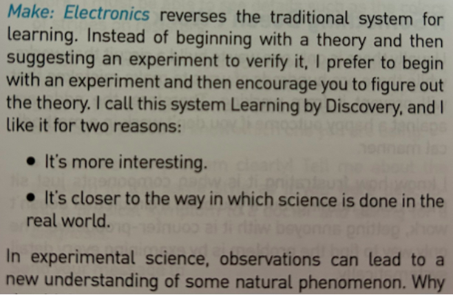
- In deep learning, it really helps if you have the motivation to fix your model to get it to do better. That’s when you start learning the relevant theory.
- But you need to have the model in the first place. Learn almost everything through real examples.
- As we build out those examples, we go deeper and deeper, and we’ll show you how to make your projects better and better.
- This means that you’ll be gradually learning all the theoretical foundations you need, in context, in such a way that you’ll see why it matters and how it works.
Fastai : Lesson 0
- Schedule the course - how long will u take to finish each lesson.
- on which day will u watch the Lesson , what will u do after watching Lesson (next steps) etc. (to avoid procrastination & maintain consistency)
- Don’t add too many fillers while doing the course
- i need to learn all the numpy and pandas and matplotlib and python before i go to next lesson this will break the flow of your learning fastai
- Just learn enough so that you can search the thing whenever needed.
- if you start learning all the pandas features…it will alone 6 months.
- Just learn fundamentals and carry on training models (dooing DL).
- Teaching the whole game
- We’ll start off by showing you how to use a complete, working, usable, state-of-the-art deep learning network to solve real-world problems using simple, expressive tools.
- And then we’ll gradually dig deeper and deeper into understanding how those tools are made, and how the tools that make those tools are made, and so on…
- The hardest part of deep learning is artisanal:
- How do you know if you’ve got enough data, whether it is in the right format, if your model is training properly, and, if it’s not, what you should do about it? That is why we believe in learning by doing.
- As with basic data science skills, with deep learning you get better only through practical experience. Trying to spend too much time on the theory can be counterproductive.
- The key is to just code and try to solve problems: the theory can come later, when you have context and motivation.
- Get started with coding
- Even if you are not good at coding -
- Rather than thinking - it’s a shame “i don’t know coding”
- Now you have a really fun project (fastai) - to learn coding for & from.
- Lots of people have become great coders while doing the course (Zach Mueller) . You’ll learn lots of CS like -
- OOPs, Functional programming
- list comprehension
- gpu acceleration, software design, etc..
- Even if you are not good at coding -
- Don’t try to go in depth in Fastai library
- Because , If you’ve finshed fastai part 1 , part 2 + live coding + fastbook + walk with fastai – Then, you’d have implemented all the fastai library (from scratch + all the Deep learning fundamentals.)
- Utilize the Clean version of fastbook :
- This notebook contains just code (no context).
- After reading the main fastbook , come to this version - see the code and before running the code…
- Ask yourself
- why is this cell here ?
- what’s it for ?
- what’s it gonna do ?
- what’s the input and output gonna look like ?
- How to use the Provided Notebooks
- Read through the notebook. If everything makes sense, put it aside and create a new notebook.
- Now try to code the same process as we went through in class.
- If you get stuck at any point, you can refer to the class notebook. Find the solution to what you are stuck on. Look up the relevant documentation. Put the class notebook aside again, go back to your notebook, and try to code the solution.
- If you are still stuck, you can refer to the class notebook again. Do not copy and paste the needed code. Instead, type it out yourself. Check that it runs. If so, try changing the inputs, and see if that effects the outputs as you expect.
- Any time that you feel unsure about why a particular step is being done, or how it works, or why the outputs are what you observe (or anything else), please ask on the forums. As I write this (week 3 of the course), there has not been a single question on the forums that has not been resolved!
- There will be times when the journey feels hard.
- Times when you feel stuck. Don’t give up!
- Rewind through the book to find the last bit where you definitely weren’t stuck, and then read slowly through from there to find the first thing that isn’t clear.
- Then try some code experiments yourself, and Google around for more tutorials on whatever the issue you’re stuck with is—often you’ll find a different angle on the material that might help it to click.
- Also, it’s expected and normal to not understand everything (especially the code) on first reading.
- Trying to understand the material serially before proceeding can sometimes be hard. Sometimes things click into place after you get more context from parts down the road, from having a bigger picture. So if you do get stuck on a section, try moving on anyway and make a note to come back to it later.
Your Projects and Mindset
add these contents under one “Projects” section!
Tenacity and Deep Learning
The story of deep learning is one of tenacity and grit by a handful of dedicated researchers. After early hopes (and hype!), neural networks went out of favor in the 1990s and 2000s, and just a handful of researchers kept trying to make them work well. Three of them, Yann Lecun, Yoshua Bengio, and Geoffrey Hinton, were awarded the highest honor in computer science, the Turing Award (generally considered the “Nobel Prize of computer science”), in 2018 after triumphing despite the deep skepticism and disinterest of the wider machine learning and statistics community.
Hinton has told of how academic papers showing dramatically better results than anything previously published would be rejected by top journals and conferences, just because they used a neural network. Lecun’s work on convolutional neural networks, which we will study in the next section, showed that these models could read hand‐ written text—something that had never been achieved before. However, his break‐ through was ignored by most researchers, even as it was used commercially to read 10% of the checks in the US!
In addition to these three Turing Award winners, many other researchers have battled to get us to where we are today. For instance, Jurgen Schmidhuber (who many believe should have shared in the Turing Award) pioneered many important ideas, including working with his student Sepp Hochreiter on the long short-term memory (LSTM) architecture (widely used for speech recognition and other text modeling tasks, and used in the IMDb example in Chapter 1). Perhaps most important of all, Paul Werbos in 1974 invented backpropagation for neural networks, the technique shown in this chapter and used universally for training neural networks (Werbos 1994). His devel‐ opment was almost entirely ignored for decades, but today it is considered the most important foundation of modern AI.
There is a lesson here for all of us! On your deep learning journey, you will face many obstacles, both technical and (even more difficult) posed by people around you who don’t believe you’ll be successful. There’s one guaranteed way to fail, and that’s to stop trying. We’ve seen that the only consistent trait among every fast.ai student who’s gone on to be a world-class practitioner is that they are all very tenacious.
- Being tenacious also means …
- Keep going (until u finish the course , project , competition)
- Keep coming back & continue the Fastai Lessons (even if u took a break of 2-3 days or 2-3 years)
Self-Learning Tips
Learn on demand
- If you find you need to know some foundational skill, learn it at that time, and just what you need. A lot of students get lost in rabbit holes of foundational math study and never develop expertise in AI/ML as a result!
Doing an Actual Project by using something new.
- I have a project to build , how can i use a new method, new library, new knowledge, new way to complete this project, automating something in the project , making it less complex etc.
Learning compunds (grows exponentially) over time.
Skills > built on skills > built on skills…makes you an expert.
Deliberate practice :
- 10,000 hours of Deliberate practice makes you Expert.
- Deliberate practice involves Continuously taking effective feedbacks.
- Example :
- Learn a Lesson from Fastai and take a Kaggle competition based on the lesson. It will give you feedback on learning.
- Building something from scratch & putting it out in world and taking effective feedbacks from people.
Stay Engaged
- Don’t focus on the perfect learning thing.
- Focus on things that keeps you engaged.
Creativity, Work-ethics, Problem-Solving Creation
- Inspiration is for amateurs — the rest of us just show up and get to work. And the belief that things will grow out of the activity itself and that you will — through work — bump into other possibilities and kick open other doors that you would never have dreamt of if you were just sitting around looking for a great ‘art idea.’ And the belief that process, in a sense, is liberating and that you don’t have to reinvent the wheel every day. Today, you know what you’ll do, you could be doing what you were doing yesterday, and tomorrow you are gonna do what you did today, and at least for a certain period of time you can just work. If you hang in there, you will get somewhere.
- Problem Solving vs Problem Creation : I think our whole society is much too problem-solving oriented. It is far more interesting to participate in ‘problem creation’ … You know, ask yourself an interesting enough question and your attempt to find a tailor-made solution to that question will push you to a place where, pretty soon, you’ll find yourself all by your lonesome — which I think is a more interesting place to be.
Is spaced repetition useful for technical concepts/skills ?
- Instead; Try to apply newly learnt concept/skill everday.
- Test it, apply it, discuss it , teach it, write blogs on it etc.
- If doubt in using it, look up into docs.
You don’t need a Masters/PHD to succeed at deep learning
- Many important breakthroughs are made in research and industry by folks without a PhD, such as the paper “Unsupervised Representation Learning with Deep Convolutional Generative Adversarial Networks”—one of the most influential papers of the last decade, with over 5,000 citations — which was written by Alec Radford (a CS undergrad).
- What you will need to do to succeed, however, is to apply what you learn in this Fastai course & book to a personal project, and always persevere.
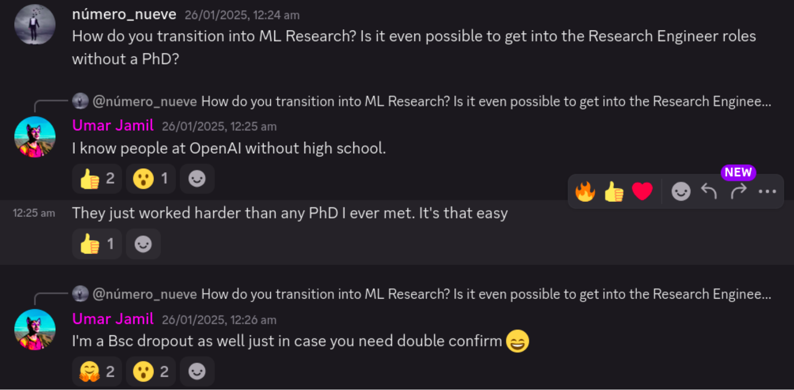
Radek Osmulski
How to become mini-Edison in your field of interest?
Follow your curiosity
I have no clue why this works, but it does. I keep seeing this over and over again.
Maybe we are naturally inclined to search for things that can be effective?
Practice over theory.
There exist two parallel worlds – a world where you are rewarded for being knowledgeable and a world where you are rewarded for making things that work.
It’s interesting to see GE Research attempting to leverage both.
Generally, there is no overlap.
People tend to maximize one or the other which produces really mind-twisting situations.
In 99.999% of technologies informed tinkering precedes theory.
So you have to choose which world to make your home.
Or maybe the decision is made by who you are and your personal history?
Build many small projects to get a good feel for what the technology can do
Seems that Edison knew a lot of practical things and a large part of this understanding came from failed experiments.
If you want to have a good feel for what might work, you have to build and experiment relentlessly.
That is very interesting, as this sounds like project-based learning from the @fastdotai course? 🤔
The most important skills for Machine Learning:
- Python
- Linux (env setup, ssh, moving files, editor)
- git
- pdb
- Creating good train - val - test splits
- Ability to scan papers for relevant information
- A learner mindset
- Clear writing
- Basic statistics
- Experiment design
Radek’s DL journey
- I would suspend my disbelief and do exactly what Jeremy Howard tells me to do in the fastai lectures.
- Finish Fastai & follow the instructions precisely.
- I will train a machine learning model after machine learning model.
- Start your Kaggle Journey Sincerely.
- figure out how to move the data around and efficiently feed it to my deep learning model!
- learn how to set up a remote VM for work and how to navigate around Linux.
- Become extremely active on Fastai forum & Discord , Kaggle Forum.
Persistency is everything
- Jeremy Howard was asked about what seperates the students that do really well for themselves from students who don’t. Without hesitation he answered - “Perseverence.”
- I am in my 8th year of this journey, I won a Kaggle competition and I am writing a book about machine learning. But most of the time I feel like a beginner. The code I write has bugs. I execute on the tactics I describe in this book imperfectly.
- But I continue to get better and better results. And, I don’t know a person who would be more surprised by this than me!
- I look around at the people I met along the way. They come from various backgrounds, had various starting points. My assumption is that if you were to know them better, or to know me better, you would be surprised by how ordinary we are. When it comes to me, ordinary is not even a good word. Fallible, misguided, caring about things that have no relevance in the longer run. All these would work better to describe me.
- And yet here we are, where you are reading the words that I wrote. Where I finally have a job I am very happy about in an industry well known for how well it pays.
- I can’t help to not agree with Jeremy Howard. He met way more people than I have and has a sharper mind. The only apparent distinguishing factor is how persistent one is.
- If you have a good map of the terrain, you can arrive at interesting outcomes much sooner than I have.
- Nonetheless, one thing is certain >> At any given moment, as you put in the work, you can barely notice a difference in your life. But the longer you stay the course, the more rewarding the journey becomes. Learning compounds and you need to give it time to start seeing the exponential results.
- Combine Persistence with community involvement and you cannot be stopped.
How to gain a competitive edge over 95% of people learning ML
Machine learning is a vast ocean of ideas. That is why you need this very important skill to thrive in this sea of wonder :
At every point of your Machine Learning journey, you need to be crystal clear about what you are after. - Do you want to break into tech? - Do you want to become better at solving real-life problems? - Do you want to contribute to open source?
You can – and should – do many things over a year. But you should work on only a single project at a time.
Sun heats up and feeds the whole planet. A laser needs 1/100000th of the energy to cut through rock. Here are a couple of examples:
Are you doing the fastdotai course? That means you are not: - taking MOOCs on @coursera - becoming a DALL-E prompt engineer - learning web dev from this one cool YT personality
Want to win at kaggle ?
- Here are the things you are not doing then:
- reading that fascinating book about doing statistics in APL
- learning about programming paradigms on@edXOnline
- taking up crocheting (which is super fun, BTW)
- reading that fascinating book about doing statistics in APL
- There is no magic to success.
- You do not need any special powers.
- You pick one thing and you do it every day.
- You look at your progress over X.
- X ∈ {week, month, year, decade}
- You ask yourself – is this what I need more of?
- If YES: pass
- else: do something else
- You do not need to do a single thing in life only.
- But you need to only do a single thing at a time.
The Secret to learning ML Faster ⚡:
- What is the ONE THING that is an obstacle to doing Machine Learning better?
- Not understanding the theory behind some of the models? Not knowing the math?
- Be honest with yourself.
- Based on your experience, based on what you are seeing around you, is this REALLY what is in your way?
- What is the shortest path FOR YOUR SPECIFIC CIRCUMSTANCES to massively improve at machine learning?
- You have to be sensitive to your conditions.
- For Example : As I started to get really deep into Machine Learning ; I observed that the main thing stopping me from becoming much better at ML was my ability to read and write Python!
- The whole obsession with math and reading papers was just a mirage.
- The true area where I was hurting was my ability to read and write Python.
- Once I identified this the improvements were easy and results dramatic.
- So what is the one thing that is in your way of becoming a better Machine Learning practitioner?
- Is it your ability to configure your own workstation or set up a cloud VM?
- Is it your ability to structure an ML project and to grow it organically?
- What is it?
- Focus on that one thing. Don’t worry about what others do. You are the main protagonist in your own story!
- Don’t listen to what worked for people who are vastly different to who you are.
- React to your current setting.
- Eliminate the bottleneck to make the whole system of you as a machine learning practitioner running much more smoothly!
Keep It Simple (KISS) 😇
- Give priority to really doing Machine learning / Deep learning , which will keep you motivated to learn all the secondary things around doing ML/DL , like setting up cloud VM , learning the Math needed, software design etc..
- This way you learn the things just needed to improve in DL ; Instead of spending months of research/learning those secondary things ; which results in Loss of Motivation and productivity and slow the progress.
- “To start, focus on what things DO, not what they ARE”
Use Constraints to learn Machine Learning 12x faster! 🕐
- Training the models and violating them properly ie. robust evaluation and testing methodologies in assessing the reliability and generalizability of ML models beyond their initial training data.
In ML, after training a model using a dataset, it’s crucial to evaluate its performance on unseen or test data to assess how well it generalizes to new, unseen examples. This evaluation involves various metrics and techniques to measure the model’s accuracy, precision, recall, F1-score, etc., depending on the problem type (classification, regression, etc.). deliberately testing the model’s limits by providing it with challenging or edge-case data points that might not align perfectly with the patterns seen in the training data. This process helps in understanding how the model behaves under different conditions and whether it can handle unexpected scenarios or outliers effectively.
Use constraints and Focus on whats important:
- Instead of dreaming of for the best DL hardwares , figuring out cloud VMs ; See how far you can get in a kaggle competition just by using Kaggle notebooks.
- focus on What are the quickest improvements possible to improve your models.
- Use Constraints : Set constraints on yourself ; to clean the space and focus on what matters.
- Don’t keep on researching for weeks:
- Timebox 2-4 hours or a day for thorough research; for what framework to use in this situation. And then Stop researching.
- Jump into the framework , get good at it.
- Find your fav ML expert; and Study the courses/books they used to learn ML.
- No course is perfect.
- The value is in accumulating the concepts and knowledge and then moving forward.
The Most important component of any ML project 👤
- So what is the most important component of any ML project?
- Is it the CPU, amount of RAM, disk space?
- Or maybe it is all about the GPU that you have? Or maybe the data?
- There is only one component that is shared across each and every project that you work on. And that is - YOU!
- The hardware, the data, all of it are just ingredients. And you are the chef.
- And therefore it makes absolute sense to devote the time and energy to grow your skills.
- In fact, traversing the Kaggle forums, I am constantly reminded how much people can achieve with very little!
- Instead of spending a month researching the tiny differences between various GPUs Invest that time into actually training models AND developing your skills?
- And if you are struggling with time management, you are not alone.
- But you can always make your life simpler by deciding what you will NOT give your time, energy and attention to.
- Not only not getting distracted by Netflix, but also not getting distracted by another free course that we could passively consume.
You have to get out of tutorial hell as soon as you can
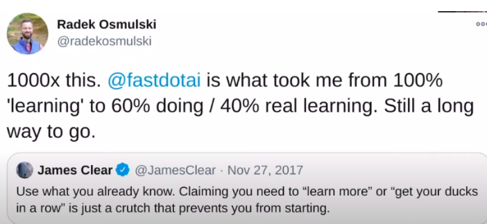
You have to get out of tutorial hell as soon as you can. Its a complete waste of time.
How @fastdotai courses avoid this problem
What i am doing to not get stuck in tutorial hell when learning from other sources.
@fastdotai courses were designed using the top-down philosophy.
The Idea:
- Share enough in a lecture to get one up and running.
- Each lecture was a complete project – it provided all you needed to train an image classifier, recommeneder model, etc.
- Also each lecture featured a call to action!
- Walk through the notebook & figure out all pieces work together.
- Train the model on a different dataset.
This is what i am doing to address this in my life that you can copy:
Reflect on how much time you wasted due to tutorial hell in the past.
- Experience on its own is useless.
- Only when you reflect on the experience and re-live the futility of an approach you tried in the past can you change your ways.
Cut following a tutorial short.
- Most non-@fastdotai tutorials attempt to teach something complex.
- But usually, you need very little to get going.
- Stop early and work on something of your own.
- Scan the rest of the tutorial to know where to look for info when needed.
Convert learning(going through a tutorial) to a standalone project.
Examples of such projects:
- @Kaggle competitions
- a repository you create and tweet about
- a blogpost explaing said thing
There are two crucial reasons why you should start working on a project of your own as soon as you can:
- It is very motivating.
- You never know what you will need to learn up front.
- There are so many things one could learn on any subject!
- Learning as you go – or just-in-time learning, is an incredible hack.
- It tells you exactly what you need to learn.
- Very often, you will be surprised at what you are missing!
- You move fast not by hustling/dumping hours into doing stuff.
- You move fast by honing your ability to focus on the essentials.
- Two vastly different approaches.
Life changes , OR how the Fastai course went from being too high level to too low level from my perspective
I remember taking the fastai course for the first time.
“OMG this is so high level, how is this even learning? Where are the derivatives?”
That was at a time when I studied machine learning.
I didn’t compete at Kaggle. I didn’t have an ML job. I watched lectures, read books and papers, pondered set theory and the construction of real numbers, I didn’t even realize that PyTorch (or anything else with autograd) existed and I wrote code like this.
Fast forward 5 years to this week’s lecture. Having worked in ML for the last 4 years or so.
“OMG this is so low level. Ahhh so this is how we calculate the bias term, and this is where we stick with torch.no_grad(). Ahhh, I see.” I found this experience quite surprising What is the meaning of all this?
On one hand, it might be that what you do in the workplace, how you bring value to the world, is very far removed from the perception of learning instilled in us at school.
The acquisition of skills that make us valuable in the real world might not feel like learning at all!
Case in point – the job that I started just recently. I am getting so much value in my work from - being able to identify what is important to focus on (we practice this as we learn a new way of reading papers which will most likely be discussed later in the Fastai course) - how to learn from jupyter notebooks created by others (this literally mirrors the process of doing the fastai homework!) - being able to set up my own work environment, install software libraries, navigate to parts of the codebase that are relevant without giving it too much thought, all of this has become second nature to me and is something that we practice in this course
And the list above doesn’t even mention probably the biggest component of what I do on a regular basis, that probably led to me having ML jobs in the first place, and that is technical writing! Something that felt like play, that I only continued to practice because of fastai, but that actually turns out to be the real work despite seeming to the contrary! (a great blog post on how to get started 8)
Another lesson I derive from this experience is that your perception of what is covered in the course speaks more about you and where you are in life than about the course itself.
The best thing one can do for oneself is to approach the course with an open mind. Follow the instructions and withhold your disbelief for as long as you can.
From that it springs, that the best way to evaluate this course is not by how you feel about it now but by the effects it produces for the ones who have taken the course some time ago.
And the effects are quite good :
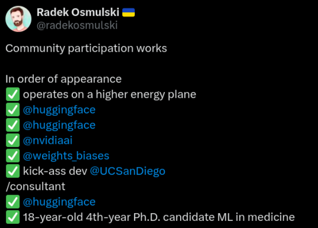
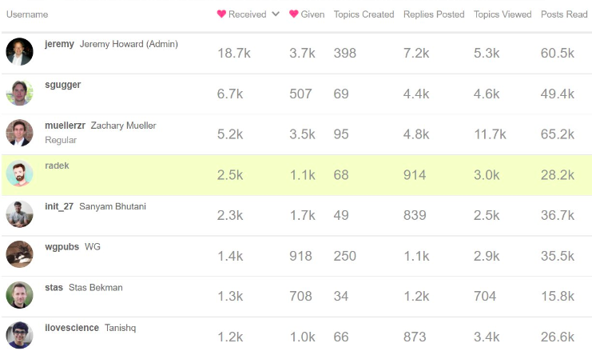
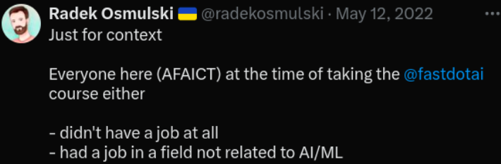
The Secret Power of Doing Things Badly
“Doing things badly” is a metaphor for overcoming perfectionism and fear of failure. Instead of paralyzing oneself with the need to do everything perfectly, embracing imperfection allows for action, experimentation, and ultimately, progress.
Perfectionism is a roadblock to progress. The fear of failure can prevent us from even starting, while striving for impossible ideals can lead to frustration and burnout.
Small, imperfect actions are often more powerful than grand plans never acted upon. By taking tentative steps and accepting stumbles along the way, we pave the path for learning and growth.
A playful and positive attitude can unlock creativity and open doors to opportunities. Approaching challenges with humor and curiosity can lead to unexpected solutions and breakthroughs.
Building connections and seeking support from others is crucial for navigating life’s challenges.
Practice saying “yes” to new experiences, even if they feel outside your comfort zone. What opportunities have you been avoiding out of fear? How can you step outside your comfort zone and embrace the unknown?
The problem with NOT GOOD ENOUGH
- Do you know how it feels to start writing a blog post but never publish it?
- To tweet but delete it 5 minutes later?
- To start working on a GitHub repo but never share it “cause the code is not clean enough”?
- These are all variations on the same theme.
- Not accepting that you are human. That you are vulnerable and fallible.
- By not telling the complete story of who you are you deeply hurt yourself.
- Yes, deleting a tweet after publishing it is 100x better than not tweeting it in the first place.
- But this behavior has its roots in a sense of shame. Along with elevated, unattainable expectations.
- UNATTAINABLE to you where you are right now in your journey.
- Listen, if I could record a better video right now, I would. If you could write a better blog post, you would.
- But by not embracing who you are right now you limit your opportunities to learn and to grow.
- Our mind evolved to protect us from harm. This is the main reason why we feel so uncomfortable in new situations.
- But if we put ourselves in those uncomfortable spots and give our mind the chance to observe that actually, nothing bad happens to us, and we do this repeatedly… <- This is how we learn
- You do not become better by sitting on the bench. You become better by playing the game.
- Give yourself the chance. Go out onto the field and swing that bat even if it feels that you stand no chance.
- For first 100 swings you do not. But on the 101 swing something magical is likely to happen.
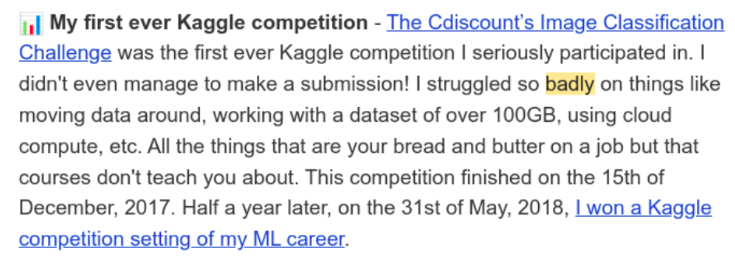
The Secret to Learning Anything Well
- Learning has two phases:
- ✅ first – you have to become comfortable doing something badly
- ✅ only then – you improve
- Here is what happens when you skip the first phase.
- Are you learning machine learning?
- You might be feeling lost.
- You might have a hard time figuring out what to work on.
- You might think to yourself:
- I will get better if I learn more math.
- bzzzzzzzzzz
- Wrong answer.
- Why?
- Did you complete the first phase?
- Did you learn to DO machine learning badly?
- Do you feel comfortable moving data around?
- Do you feel comfortable applying basic functionality from libraries such as @fastdotai or scikit to your data?
- Here is why this is important.
- If you are learning ML and are not doing ML badly…
- Chances are you are not doing any ML at all!
- You are dying to perfectionism.
- This leaves you flying blind.
- Here is what I mean.
- You cannot learn to write poetry before you learn the alphabet.
- No one can.
- There is nothing wrong with you.
- Machine learning is not harder than anything else.
- You are just taking the wrong approach.
- What will happen if you learn to do machine learning badly first?
- You will gain an understanding of the end-to-end process.
- For every action that you will take you will receive feedback.
This is HUGE! ☝️
Machine learning will become very real to you. You will start building an intuition how to move around in it.
More importantly
- Now that you’ve made machine learning tangible.
- You can let it guide you in your learning!
- You no longer have to guess What to study!
- Through feedback, you will know precisely What you need to improve.
- This makes a world of a difference.
- Its the difference between walking around blindly , and moving directly towards your destination.
- You can learn to do anything well
- But only if you first learn to be comfortable doing it badly.
A couple of things in my life I want to do more badly
- Kaggle
- Talking online
- Following my curiosity
- Being more focused
- First of all, when you try to do something well , It often takes such a toll on you that you don’t do it at all.
- Things that could be fun become less fun.
- There is a lot of stress that comes with trying to do things well. Who needs more stress?!
- How can you benefit from the Pareto Principle if you keep doing things well? D’oh
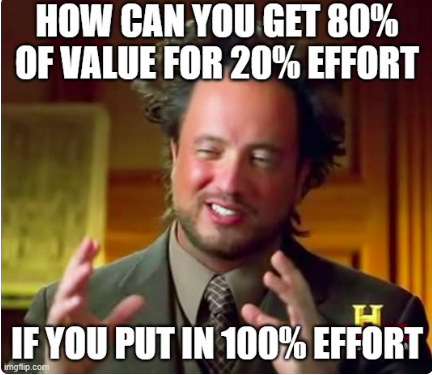
Learning is a product of quantity
- how many ML models you train ?
- how many blog posts you write ?
- how many issues you debug ?
- “Produce indiscriminately, consume selectively”
Quantity leads to Quality
- It took me 8 years to learn this truth about learning ML.
- I’ll teach it to you in the next 5 minutes:
- I used to think
- If I complete this one MOOC
- If I write 8 blog posts in 8 weeks
- If I do well in a @kaggle competition
- I will
- have learned ML
- my life will change in a substantial way
- That didn’t reflect reality.
- When your mental map does not align with the world
- you experience stress
- you are less effective than you could be
- you lose the ability to direct your life
The proper mental map is this:
- The only thing that matters is doing something over months or years.
- If you believe
- kaggle
- blogging
- doing MOOCs
- something else
- is your path, your only goal is to build it into your life.
- To do it consistently over a long while.
- Your short-term results do not matter.
- Whether you feel you are learning or not doesn’t matter.
- All that matters is consistency.
- There are no exciting destinations you can get to in life in 24 hours Or a month Or a year.
- Don’t write a single blog post. Write a hundred.
- Don’t participate in a single @kaggle competition. Keep competing for the next two years.
- If you believe
- Change your perspective to change your world.
The Secret to Becoming a Data Scientist
- Perseverance is Not Intensity
while intensity can offer quick progress and immediate results, it may sometimes hinder long-term retention, adaptability, and sustainable progress.
Perseverance, on the other hand, promotes a more balanced and sustainable approach to learning, allowing for deeper understanding, adaptability, and long-term retention of knowledge and skills.
Perseverance is Not Discipline
- Avoid HARDWORK and DISCIPLINE to work like a labour.
- Enjoyment should be the reason to work, not the results.
- Find interesting ML Projects to build + Give Kaggle Competitions + Learn ML in community … etc
Perseverence is Finding something which I find exciting and thus keep on doing it for a long time (more than 2 decades)
Enjoyment is the key to Excellence (in every aspect of life).
Why Perseverance works so well in learning ML ?
Perseverance helps to build Strong Neural Connections of Knowledge.
Entering into a new field (ML/DL/LLM…etc) ; You have to keep going , and find strategies that work. Embracing failures and try again try again.
Journey of becoming employable in Deep Learning
- What I thought becoming employable in deep learning would be
- learning a lot of math
- What it ended up being:
- learning how to talk about your work
- being able to point to the things you’ve done
- learning how to learn
- being open to new experiences
- helping others
- learning the craft of delivering good ML solutions to real-life scenarios (not covered by most textbooks/courses)
- figuring out how to use social media and limiting the negative footprint
- The Imposter syndrome
- when you think of yourself from 6 months, 12 months ago, can you see the progress you have made?
- being able to monitor one’s progress is super important.
- But it might not be best to compare oneself to others on social media. The environment favors hype and unsubstantiated claims and genuine progress and results take time. Many people chose the easier route because it works.
- you will run into people that share with honesty, but they might have been doing something for many years now and it is not apparent. I know from my own experience that the speed I was able to move at in my 2nd year of studying machine learning was dramatically different from that in my 6th year, but looking outside in no one would probably be able to tell how much I have changed.
- Sometimes the years of experience do not matter that much as I would suggest above - it’s more about what ideas and techniques you encounter at what point in time.
Do tell the world - What you are upto !
- if you do something, even with a modicum of success, make sure to tell the world about it!
- It DOESN’T MATTER how good your writing is! Just type those characters out onto a screen and send them into the world.
What to do once people know you through your work ?
If you go deeper on something in a project, share something that might be useful to users of popular libraries, or put together a howto that can help a community… chances are you might appear as a blip on someone’s radar. Someone who might be an “industry insider”.
if you are interesting enough, some of these people will reach out to you and introduce themselves in a DM! Or you might get to know them at a conference or a meet-up in real life.
Well, if you are looking for a job, TELL OTHERS that you are looking for a job. This is the crucial ingredient, I cannot overemphasize it enough.
If you’ve met this one person who took interest in your projects, and they seem like someone who is well connected in the industry, send them an email asking if they know of any openings that might be suitable to your skillset.
If you are feeling particularly adventerous, put that info (that you are looking for a new role) in your Twitter display name. People use that all the time to advertise all sort of things
Of course, don’t become a spammer. Only reach out personally to people whom you’ve built a connection with AND that plausibly can help you. As long as you are tactful and don’t hope for a response, you should be good.
Remember – don’t forget to tell the world what you want!
Magical Approach : “Value up front”
Deep truth – Everyone in life and on the Internet thinking about themselves. So what is the absolute best way to stand out from the self-interested crowd? - Do something completely selflessly for someone else!
But If you are doing something seemingly nice and useful with the intetion to promote YOURSELF, or you expect gratitute, or to show off, you will be ignored (as you should).
On the other hand, if you go about your life and think – “oh, this person is doing something interesting, is there something I could do to help?”
Then, This is such an unusual event that it unlocks limitless opportunities!
How do you help other people ?
- You look at what that person is doing and see if you can add genuine value.
- Oh, they wrote a blog post? Maybe I can share my appreciation via retweeting it?
- Oh, they seem to be maintating a software library? Maybe I can jump in and see if I can resolve an issue or two.
- Do not introduce yourself.
- Do not ask for the time of people you don’t know or where you are adding ZERO value to their undertaking.s
- You just go around and be a good citizen AND DON’T EXPECT ANYTHING IN RETURN.
How to Think about - “ What To Work On ? “
Let’s face it – the only way to ensure we do something over a long period of time is to make it fun.
if to become successful you need to do stuff you don’t want to (AKA force yourself to do stuff AKA the whole discipline thing) what is the point of changing your life in the first place?
Isn’t the whole idea behind achieving success that you have more control over how you spend your time, that you can do more activities that are “fun” for you?
Life is a journey not a destination and if you can’t make the journey fun, you are losing on the only game worth playing.
Enjoyment is the key to Excellence.
Small Bets
- Being aware of how much effort something will require is super important. For instance, let’s look at Kaggle.
- It is by far the best place to learn ML, to become one of the best in the world at ML.
- But incremental gains, going from being in the top 5% to top 0.1% requires a lot of work. Plus, what is very important – even if you are a Kaggle Grandmaster with 20 gold medals to your name, even if you understand how a problem should be approached, you still have to invest weeks of work to find yourself at the top of the LB.
- And that time can be very valuable.
- at every step of the way I plan to be aware of how much time and other resources whatever I end up doing will require and what results I’ll be getting!
- This is likely to not only help with how efficient I am with investing my resources, but should also help with how intentional I am about living my life!
Being an Eternal Student
- If you are not making money through your side projects, then why go to all this effort at all?
- You can use the stuff that you create to build your personal brand. Nothing will showcase your skills better than a project you ship and write about.
- But the true reason to work on side projects goes deeper than that. And that is that they are the best training grounds for acquiring new skills and honing the ones you already have!
- The learnings are the true currency of side projects and maximizing them is what I want to focus on!
Strategic Mediocrity
- There are so many people around doing wonderful things.
- How do they do it? Are they fundamentally smarter/better than me? Are their actions THAT good to warrant attaining results I would consider a success?
- While that would be a very optimisitc view of the world (that people are good at what they do) nothing could be further from the truth!
- A perspective where you have to be good, you have to be great, to achieve success is paralyzing and a total MYTH
- The true world doesn’t work like that. You don’t get better by trying to be better. You get better through experiences. Through iteration. Through action.
- And the only way to get a lot of action under your belt is via accepting mediocricity.
the main failure mode is not not being good enough, but not performing at all in the first place.
The True Alignment Problem
How can I tell whether my side projects are bringing me the benefits I am after?
How can you evaluate your own side projects?
One way to approach this would be to list out the things you care about and see whether you are moving closer to them or not.
But the review process needs to be ongoing. While working on something, or between projects, you have to be constantly monitoring whether you are on the right path or not and be ready to change your approach as needed.
In fact, this point is broader than just ensuring you are on the right track.
As you work on things you have not worked on before you will learn new things about the world. Maybe you will find that something is harder or easier to achieve than you originally assumed.
Or maybe you will learn that doing things in public carries less risk than we generally think it does. For instance, in our connected world we often worry whether what we say here or there might impact our professional prospects.
But the truth is that most people don’t care at all, they barely notice what we are doing.
As we go along and collect all these learnings it is fundamental that we update our interal map of the world. And this, just as ensuring we are on the right track, can only happen through introspection.
Through a continuous and deliberate process of reflecting on our experience (be that via discussing it with others, or writing about it).
One last theme to bring it all together
- Produce indiscriminately, consume selectively
- There is so much noise on social media. Everyone is so loud and the messages are so flashy. The best this, the legendary that.
- Plus it all is oh so interesting!
- And yes, there are many extremely valuable thoughts floating around. But it is next to impossible to get at them while sifting through piles of content where each piece is meant to trigger our emotions.
- That is why you have to be selective when it comes to the information you consume.
- Books, Courses, Research papers, Tutorials, Documentation, Blogs, Forum discussions, Writing down and sharing my thoughts, ML Experts podcasts are much better investment of time as compared to watching AI news , entertainment etc.
- If you are mostly a consumer you are missing out on creating a lot of value for yourself.
Tips on becoming a better programmer (as an MLE)
- I now don’t see it as learning syntax, learning about programming paradigms or design patterns. For me, becoming better as a programmer now always starts with what I already know, even if it is very little, and learning on top of it via iteration / trying things out. Maybe - —
- writing something somewhere about what I learn to structure my thoughts (though in a class room I guess one can also talk to people which must be nice “. One thing I don’t do enough for sure is reading other people’s code - this is probably the best way to learn. - —
- Refactoring! I don’t think I ever heard this discussed in an academic setting, but this is one of the most important practices / skills. This book is great https://refactoring.com - it explains the entire philosophy (probably no value in going too deep on the techniques when someone is just starting out, but the understanding that this is 99% of what writing maintainable code is about is invaluable.
Zach Mueller
How to become good MLE like Zach
If you were starting out today what would you focus on and you wished you knew earlier in this DL journey ?
- Get. Good. Software. Engineering. Skills.
- Same with math, strong code skills helps everything much easier in this space.
- Do the Fastai courses. Follow Jeremy’s advice precisely.
- Read all of Stas’ Book end to end, and watch all the DL from Foundations (fastai 2019 course)
What are the most important things you learned from mistakes?
- How to debug well, through brute force learning of it.
Favorite Learning resources :
- Python Distilled
- Fastai Book + DL from Foundations (fastai course 2019)
- Stas Bekman Book
- Clean Code (Uncle Bob)
- A philosophy of software design (John Ousterhout)
- The Art of Readable Code
Stas Bekman
- Machine Learning: LLM/VLM Training and Engineering by by Stas Bekman
- The Art of debugging
- The AI engineering battlefield (guide)
Sairam
How would I learn machine learning today
One of the most frequent questions I get is “How would you learn machine learning if you were starting today?”. I thought that it might be worth it to actually write it out and share it with all of you. Here’re 5 things I’d do if I were starting over today…
Tip #1: Get Going
If you’re unsure where to start and feel intimidated by the math, take a code-first course. If you feel excited by theory, take a theory first course. The most important thing is that you start.
Tip #2: Build your Fundamentals
Don’t worry about which framework to learn. Pick whichever one you like and run with it. What’s really important is that you learn the fundamentals. Pytorch, Tensorflow, and Jax are all frameworks that help you solve problems, but the fundamentals that they implement are the same. Focus on those first. Every time.
Frameworks come and go, fundamentals come and grow.
Tip #3: Read and Implement Papers
Forget trying to keep up with all the advances in the field. Machine learning moves way too fast. Instead, understand the implementations of papers you’re reading and reimplement them yourself. That will help you tremendously and compound your learning.
The best papers of today will become the textbooks of tomorrow.
Tip #4: Learn Publicly
Write about what you learn and share it publicly. You don’t need to be an expert. There are a million others who have the same questions you do. Make their lives easier. Share your knowledge. This is the step that everyone skips. Learning in public will build connections that you previously may have missed.
Tip #5: Be a T-shaped learner
Dive Deep into your area of interest like Computer Vision but explore other areas like Natural Language Processing, Recommenders, and Graph learning.
Great research ideas are the byproduct of cross pollination.
If you’re not sure where to start, Begin your Kaggle journey seriously. Competing with the best in the world will raise your level and will accelerate your learning. ## 5 Steps to 10x your Machine Learning Productivity
5 Steps to 10x your Machine Learning Productivity
Step 1 : Rule of Three
Ask 10 people how they’d handle multiple projects & deadlines and 9 of them will tell you to multitask.- This is not the solution.
Instead, each day, write down the top 3 things you want to get done. These could be things that are time-sensitive or maybe are difficult problems you need to solve. Our brains aren’t great for storing information. They are great at thinking and problem solving.
Multi-tasking forces the brain to juggle and remember tasks and where they are in the execution cycle.
Writing 3 things down unburdens your brain and allows it to focus on what it’s great at — problem solving. Additionally, you get the nice dopamine hit when you finish and check off an item from your list. Any item that isn’t fully completed at the end of the day gets rolled over to the next day’s list.
If you do this, here are the results you can expect to happen:
Deep Work: Uninterrupted spells of flow state allowing you to do your best work on a task.
Less context switching: No more switching between tasks when you’re in the zone. Additionally, no more background threads about the other task(s) you left unfinished while you’re working on the one at hand.
No procrasti-planning: Procrasti-planning is the constant mental gymnastics your brain does to organize the order in which things need to be done. Eventually, nothing gets done because you spent all your time and energy on planning and not on doing. Simply put, it’s procrastination masquerading as planning.
Step 2: Bitter Pilling
Once you’ve got your 3 things, here’s the next problem you’ll likely face. We all have tasks on our plates that are boring, monotonous or painful to finish. For me, these are data annotation, cleaning, writing automation scripts and reports. Your instinct might be to finish off the tasks you enjoy first and then come to these painful blisters last.
Don’t put the most boring thing off for last.
Get it done first. Swallow the bitter pill. Why? If you do it first, you can enjoy the rest of the tasks in peace. Furthermore, you’ll be happy to get this work done soon so that you can devote your time to intellectually stimulating work. Another pitfall you’ll avoid is that you won’t repeatedly postpone doing them until your plate is filled ONLY with these kinds of tasks.
Step 3: Batching a.k.a Pipelining
After you’ve accomplished Steps 1 and 2, now it’s time to pipeline. If you work with deep learning models, you’ll be familiar with the amount of time it takes to train and fine-tune them. What I’ve found is that these long windows of waiting are ripe for pipelining.
While you have experiments that you are waiting on, do something else in parallel.
For example, I read papers, answer emails or go get my workout done while my model trains.
Models aren’t the only ones that work well with batches. You do too.
Step 4: Owl or Lark?
At this point, you’re now ready to tackle peaks & troughs. Each of us have unique windows in a day when we are at our maximum effectiveness (peaks) and minimum effectiveness (troughs). The trick is to schedule our work so that we prioritize high impact work in these optimal windows.
Here’s what to do:
• Do your high impact work like coding, brainstorming, researching when you are at your peak effectiveness
• Do low impact work like automation, answering emails, logging bug fixes, etc. outside of peak hours
Owls are those who are most effective at night. They thrive when their high impact work is done in the night. Larks are those who are most effective during the day. The converse is true for them.
Are you an Owl or a Lark? Find out and maximize your effectiveness. Do your best work at your peak hours
Step 5: Build a bridge
That’s it! Now it’s time to build a bridge for the next day. A simple mistake I used to make was to just drop what I was doing at the end of a day and come back the next day to resume. A side-effect of this was that it took me a good half hour to identify what I was doing the previous day and what I had to do next.
Find a good stopping point for unfinished work: Make it easy to pick up the next day
Write a note to yourself on what you need to look at next. That way, you don’t start the next day with a blank slate
Celebrate your accomplishments before you close
Overall, The reason this framework works so well is because it’s repeatable and your work compounds with less friction and mental burden. So, don’t fall into the trap of being a multi-tasking juggler.
Do this instead.
Part-Time Learning for a Full-Time Career:
Wherever you are in your career — A student, a fresh graduate just into work, or a grizzled veteran, there is one mindset that you should never abandon. That is the growth mindset. A key component of the growth mindset is the habit of constantly learning new things. This is incredibly relevant for machine learning practitioners.
So, how do I constantly learn you ask?
Learning anything new is hard. While our brains enjoy the pursuit of knowledge, we experience inertia during the early stages. We then use the algorithm in our head that I call the “Logical Explanation of Procrastination” to justify our unwillingness to learn. You may be familiar with some of the reasons this algorithm provides:
- I have limited time since I have ______ (The blank is usually filled with too much work, family commitments, etc.).
- I don’t know where to start.
- Learning is an isolated pursuit and I don’t have the motivation.
- I easily get distracted and don’t have the discipline
- Insert your reason here
Additionally, most people think the solution is to either adopt the “hustle” mindset and burn the midnight oil (and the candle at both ends by extension) or quit their job and learn full-time.
These proposals aren’t sustainable. I learned machine learning (and deep learning eventually) while working full-time. I made a ton of mistakes and hit many walls along the way. Eventually, I came up with a sustainable approach to learning and I figured that might be useful to you.
Just-In-Time learning
Learn something new exactly when you need it and bring together the resources you need as you are learning. This might seem a bit confusing. You could argue that you don’t do machine learning at work, that the topic you want to learn isn’t related to the research you do, or that you’re looking to learn machine learning to switch careers. What then?
This technique still works. How?
Just-In-Time learning is project-based. The project doesn’t need to be what you are doing at work (If it is, then that’s awesome). It just needs to be something you want to do.
Simply define a project you want to pursue, say an image stylizer or a speech synthesis system, and work back from the goal. Find papers that solve this problem and read them. Augment your understanding through repositories in GitHub that solve the problem or a sub-problem. Work back from the goal until you have every single step mapped out.
The key is to only collect and use resources that are directly relevant to your end goal. Ignore everything else.
This ensures that you don’t waste time searching and getting buried under a never-ending pile of resources. So, we have a starting point. How do we deal with the lack of time?
For this, I take a leaf out of James Clear’s book Atomic habits. There are 4 laws of habit formation:
- Make it obvious
- Make it attractive
- Make it easy
- Make it satisfying
Applying each to Just-In-Time learning, we get:
Make it obvious:
You only collect resources that help with the end goal, so there’s nothing unclear as to what you should ignore. Every step you need in this learning journey is obvious.
Make it attractive:
If the goal of your project is work-related, then the rewards are explicitly laid out. If on the other hand, you are looking to transition into a career in machine learning, the #1 thing that companies look for is proof of work. There’s NO bigger proof of work than a body of GitHub projects, open-source contributions, etc. Courses and transcripts only go so far. At the end of the day, companies want to know you can actually do the work hands-on.
Make it easy:
Work on it, piece by piece, regularly. Even if you only have 30 minutes a day to devote to this, that’s fine. Show up. Your learning compounds over time. By committing to a manageable chunk of time every day, you make it easy for yourself and remove the “lack of time” excuse from your quiver of reasons to not learn.
Do the math: 30 days x 30 minutes per day = 900 minutes of focused learning
Make it satisfying:
There’s an intrinsic satisfaction you get by just showing up. When you master a hard skill, you gain confidence, and each new thing you learn helps you learn harder things more easily. Learning is its own reward.
One of the Best Ways to Improve Your ML Skills :
Let me tell you a secret:
The single most effective habit that helped accelerate my learning wasn’t just reading papers, books, or watching lectures.
It was actively studying others’ code.
I ran code reviews of other repositories. This allowed me to learn how various algorithms were implemented and pick up best practices to use in my own work. This is how I did it (and so can you!):
Step 1: Implement the Algorithm Yourself
Before jumping in to see how someone else has implemented a model or an algorithm, do it yourself first. It doesn’t need to be perfect. Just write out how you think the algorithm works and test it.
Average case: It works. Best Case: It fails.
Why is that the best case? You will be more open to learning from another repository. If you’re anything like I was, the moment something worked, I’d immediately close my mind to exploring how it could be done better. It wasn’t until much later that I changed my perspective on how writing good code is an endless process.
Step 2: Find Good (and Bad) Examples of the Algorithm
There are a million repositories on GitHub that implement the same thing. How do you find out which ones to learn from? There are 3 simple options I choose from:
Option 1: Use the Official Implementation
In machine learning, often times the algorithm you implement comes from a paper. That naturally means that there is a high chance that the code for the paper was released along with it.
Start there.
You can learn how the authors implemented various parts of the algorithm straight from the source.
Option 2: Look up the Algorithm on Papers With Code
If you can’t find an “official” implementation, the next best bet (and in fact, this should be option 1) is to look at Papers With Code.
This site has a huge collection of papers with various repositories that implement them. In addition to the paper, you can see the top-ranked repositories that implement the paper.
Option 3: Use the Number of Stars as a Guide
If the authors didn’t release the code (boo!), and you can’t find it on Papers with Code, then the next best bet is to search with the phrase “INSERT NAME OF ALGORITHM HERE GitHub”. Then, use the number of stars the repository has as a guide to choose a starting point. Usually, a repository with a higher number of stars ( > 1000) is a safe option to learn from.
This isn’t a hard and fast rule though.
There are many hidden gems out there that just haven’t gotten the eyeballs on them yet.
Step 3: Learn from the Contrast
You now have the repository (or repositories) you’d like to learn from. The next step is to learn the differences in implementation. Crucially, just focus on the core implementation first.
For example, if you are trying to learn a new model architecture, focus on just the part of the code that implements the architecture.
With the paper at your side, see how each part has been implemented by this repository and contrast it to how you’ve implemented it. This isn’t to say that what you have done is wrong. Rather, observe the contrast in styles, usage of idiomatic code, brevity, and clarity.
Next, take notes on things you don’t understand on the first attempt. Why did they implement it this way? What is this new syntax they’ve used? How are they accounting for X? These are all great questions to think through.
One of my favorite repositories that implement the vision transformer is by Phil Wang. In the image below, look at the highlighted line. When I first came across it, I had no idea what that syntax was. Turns out, it’s something called Einstein Summation, or einsum for short. It’s a super efficient way to manipulate tensors.
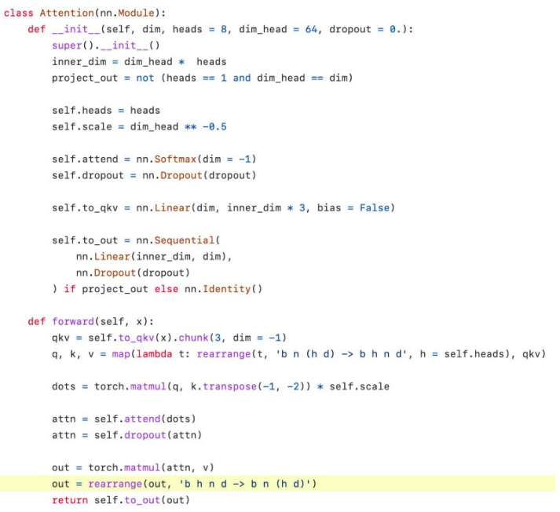
Now, I use this when relevant in my implementations. This is just one of the many things you can do when studying a new repository.
Not All Repositories are Created Equal
Repeat after me. “It’s ok to study poor code”. 🧐
While this might surprise you, look at what a legendary author says about the same thing in another domain:
“Every book you pick up has its own lesson or lessons, and quite often the bad books have more to teach than the good ones.” ~ Stephen King
You can learn a lot from poorly written code. It tells you exactly what not to do, why not to do it, and how not to do it. Bad code helps you clearly identify the pitfalls to avoid and how you can save hours if not days by writing good code in the first place.
Step 4: Expand Your Toolbox
You’ve now done all the hard work of studying and analyzing a set of good and bad implementations. But your job isn’t done. The last step of the process is perhaps the most important.
Reflect on your notes and your learning. Augment your toolbox. In particular:
- What are the techniques I can use going forward?
- How can I make my implementation more readable and clear?
- What are the things I should avoid when implementing this?
The next time you implement something, try to incorporate some of these learnings and see how they work in action.
TL;DR
- Implement it yourself
- Find Good (and Bad) Implementations to study
- Learn from the Contrast
- Expand Your Toolbox
Machine Learning and You - in the tech Industry
“When patterns are broken, new worlds emerge.”
There’s never been a better time to transition careers into the ML space. Seriously. The best time was 10 years ago.
The second best time is now!
There are a few common misconceptions I’d like to tackle before getting to the various roles that might interest you as a practitioner.
Misconception #1: You need to have a PhD
The short answer is that you don’t. The long answer is you don’t for 99% of the roles. A Ph.D. in machine learning is needed IF and only IF you want to break into the top tech research labs as a research scientist. For just about any other role, you don’t need one (unless you really want one and would like to be addressed as Dr. INSERT_YOUR_NAME_HERE).
The primary reason a Ph.D. is valuable in my opinion is that going through a rigorous Ph.D. program teaches you how to do systematic research, and how to formulate abstract ideas into concrete problems that can be solved.
I don’t have a Ph.D., and I’ve transitioned from a systems engineer to a research engineer to a research scientist (humble brag, sorry). The reason I bring it up is that you need to know that this isn’t a barrier to entry. You can and you should apply to roles that interest you, AND for which you have the skills to deliver on the job.
What you need is a curiosity itch, the ability to code, and the willingness to learn new things. These three skills will help you break into big tech, and grow in the machine learning space.
So, repeat after me - “I don’t need a Ph.D. unless I absolutely want to go out and get one.”
Misconception #2: You need to be really good at math
Machine learning is math-heavy. I agree. But, you don’t need to know all the math in the world to get started. In fact for some roles in ML, you’ll be so far removed from any kind of math that you’ll wonder why you didn’t transition sooner. I won’t lie, there’s some high school math that’s really important. You can learn that on the job as and when you need it.
Don’t let this stop you either. Please.
Misconception #3: Your past career experience is useless
One of the most beneficial skills to acquire in any kind of machine learning role is domain expertise. So whether you’ve been an accountant, or have worked in pharmaceuticals or any other field that seems remote to ML, know this - Your domain skills will actually help you, not hinder you.
Here’s why.
The hardest skill to acquire is business intuition. Not ML. If you can’t communicate why you need to use machine learning, or how it would solve your business problem, you won’t get buy-in from all the stakeholders.
Your domain expertise will let you speak to non ML folks in a language they understand!
So treat your past experience as a superpower, not as wasted effort.
With these out of the way (read them aloud if you aren’t convinced yet), let’s look at the two broad categories of machine learning roles:
Machine Learning Research:
The goal of research is to push the boundaries of the field further and to solve fundamental problems. Essentially, the team may go, “Alright folks, let’s see if this claim is valid or not and go down this rabbit hole”. Some research may lead to products, BUT, that isn’t why research is pursued.
Companies also have a flavor of research called applied research. This is usually directed to solving practical problems the company has, and may have shorter time frames.
Research roles are of two kinds:
Research Scientist: This is probably the only role in ML that usually requires a Ph.D. There are circumstances where a high performing engineer with a good track record of top-tier publications gets into this role, but those are far and few. A Research Scientist comes up with novel ideas, puts them to the test and publishes them. Additionally, they act as advisors to other engineers in the team.
Research Engineer: This role isn’t present in all companies. Sometimes a company might use Research Engineer and Research Scientist interchangeably. The Research Engineer usually works in collaboration with the Scientists and runs experiments that evaluate ideas they come up with. This role doesn’t require a Ph.D. or top-tier publications.
Machine Learning in Production:
As the name suggests, the goal of production is to come up with a product - be it a good or service. Machine learning in production usually deals with a need that the company’s users have. Naturally, the constraints are different. In research, you might focus on beating the state of the art. In production, however, your goals may be ensuring that the ML system runs fast, reliably, and works well with the other parts of the product.
Thus there are more hats to don, and more opportunities to enter the field.
Below are a few different production roles I’ve seen in the industry:
Machine Learning Engineer (MLE): The MLE is a software engineer who has ML skills or can learn ML skills needed for the role. Their goal is to design, build and productionize ML models for business needs. In this day and age, this is one of the coolest roles to have. Your work directly impacts the product.
Data Scientist: A data scientist needs to form their own questions about the data and use machine learning or predictive modeling to answer them. Data science is a deep and rich field. As a data scientist, you’ll turn data into business insights and help the organization make better decisions. The key phrase is unlocking meaning from data.
Data Engineer: They make it easier for others in the organization like Data Scientists, and MLEs to use data for their needs. To do this, a data engineer builds systems to collect, manage, organize and analyze data at scale. Raw data is hard for anyone to use, and in this age of big data, managing and creating an effective structure for the rest of the organization to use is an invaluable skill.
There are some newer roles emerging like ML ASIC Engineers, Infrastructure engineers and so on which might also interest you depending on your background.
Overall, there’re a ton of roles that you can choose from depending on your skills and interests. You just need to start.
Key Takeaways:
- You need just three things to get into the ML field:
- A willingness to learn
- The ability to code
- Curiosity
- There are many opportunities for you - Find the right starting point
- Don’t wait to learn everything and then start. Learn what you need. Learn the rest on the job.
Rohan Rao
- How do you manage time?
- Focus on Prioritization & Sacrifice and have the Discipline to Plan & Pursue. I believe it is a very underestimated skill.
- I have described the process in detail in my CTDS interview:
- How to choose the right ML model and parameters?
- Set up the right validation framework - [[Good Validation Set]]
- Experiment on as many models, architectures, hyperparameters
- Pick the one that best suits your needs (accuracy, stability or latency are usually the choices)
- Is statistics a major pre-requisite for learning ML?
- Desire to learn new things. Perseverance to read, code and experiment hands-on. Willingness to invest time and energy.
- I’d pick these as more impactful pre-requisites over statistics.
- What helped you improve concepts in DS?
- In order of impact:
- Desire to learn
- Investment of time
- Google searches / YouTube videos
- Kaggle forums / notebooks
- Source codes / GitHub repos
- Research papers
- Friends
- In order of impact:
- Research vs Implementation priority in ML?
- You need to nurture and grow your knowledge in both.
- Without research, how do you know what to implement?
- Without implementation, how do you know the impact of research?
- They are two sides of the same coin.
- Which is your favourite ML model?
- In this fast-moving ML field I don’t believe in marrying any algorithm or technology.
- My favourite model is the one that gives me the best results!
- Having static favourites can stunt growth. Let it change based on the data.
TryBackprop (MLE @FAANG)
Hows the market saturation of AI/ML engineers these days and how to overcome it ?
At FAANG, there isn’t too much saturation. In fact, for the most part, the AI/ML engineer role was resilient to the tech layoffs and the hiring freezes of the past two years (of course, there are exceptions if you’re underperforming). What I found interesting was even during “hiring freezes”, FAANG made an exception for senior level ML engineers.
The market is likely saturated with underskilled AI/ML engineers, so to overcome it, after you get some ML experience, to set yourself apart from the others, get familiar with the fundamentals. It’s not enough to know how to use the ML libraries like PyTorch/TensorFlow. You must also understand why they work so that you encounter production issues with real world systems, you can debug them more easily. It’s not a good use of time nor is it feasible to read through all real world systems code so you need to sharpen your ML reasoning skills. To help, Andrej Karpathy’s zero to hero series on YouTube is incredibly valuable: https://youtu.be/VMj-3S1tku0?si=SI7f8BnJDmQleBkf. For context, Karpathy graduated from Stanford with a ML PhD, and he worked at OpenAI and Tesla as an AI director on their self driving car effort.
As for engineers with zero experience in ML, it helps to land a role in an ML team where you’re working on regular software engineering. At least you’re close to the ML action. I’ve seen many engineers take that approach. Then, at home, continue to learn ML at home when you have time. Eventually, once you’ve built up enough context at work, you can ask your manager for a role change within the team or at least start working directly on ML projects. I know this works because my coworkers did this, and I’ve done this as well.
How is job market for freshers? I heard somewhere that you need to have previous work experience in data science or any other domain to enter into ML. Is it hard to directly get hired as ML fresher without any work experience?
- That’s not true, though it does help to land a FAANG role. If you have little to no experience, you can continue to work on side projects and possibly land contract roles or roles at smaller companies that are willing to take a chance on you (since they can’t afford to hire FAANG qualified MLEs yet). As you build experience with the projects and the startups, you can hop to FAANG in a year or two if you’ve learned the fundamentals well and have gotten good experience.
Any project suggestions? How to land a job?
Project suggestions – code up a convolutional neural network and train it on the MNIST dataset. Most people can’t even do the basics like that. Then code up a transformer decoder and train it on the tiny shakespeare dataset (you can watch Andrej Karpathy’s excellent video on this: Let’s build GPT: from scratch, in code, spelled out. - Karpathy | YouTube). If you accomplish these two, you’ll for sure generate plenty of great project ideas to put on your resume along the way. Most people will lose motivation to accomplish these two coding projects.
How to land a job – go to ML panel events. Talk to the panelists. Ahead of time, do some research on the panelists so that when you chat with them, you can impress them and feed into their ego that you know what they’re working on. If you have also done some side projects, be sure to mention it. They’ll likely ask for a resume and see if you’re a good fit. Landing a job requires both knowledge of the ML and being a hustler and networking with folks. Most of people I know who landed an ML role after working in traditional software engineering simply networked and knew the right people. You can network from anywhere in the world as long as you have an internet connection.
If you want a role in AI/ML, my suggestion would be to figure out what type of company you’d want to join (in terms of size). If you want to join FAANG, you can certainly apply, but if they reject your application, don’t be discouraged at all. I would personally apply to smaller companies and startups, build up some experience there, and if the startup does well, you’re benefit. If the startup doesn’t do well, at least you’ll have had some experience working in ML, and you can apply to FAANG, which will value that experience.
What level of math do you use in your daily work? What’s the most frequently used ML concept, library or tool in your work? Imagine If you’re a student graduating this year, how will you prepare for an ML job interview?
- level of math – Day to day, I use at most algebra level math. If you can solve a system of 7 or 3 equations, you’re good. Probably about three, four times a year I’ll need to deeply reason about a system and calculate derivatives of single or multi variable equations, but even then, it’s pretty simple.
- Most of the time I rely on my stats and probability knowledge, which you can learn if you were to take the first 4 weeks of any U.S. undergraduate course on stats/probability.
- ML concept – Know your neural network fundamentals well.
- Library – PyTorch, Python
- tool – online monitoring tools to monitor traffic and neural network diagnosis tools
- interview – I’d follow this former OpenAI scientist’s curriculum that he established at OpenAI for almost all folks new to ML: https://github.com/jacobhilton/deep_learning_curriculum
Since AI field is developing so fast how do u stay up-to-date?
The AI field is developing fast, but the major breakthrough concepts come out every few years, so you can spend most of your time on the breakthrough concepts and not feel like you’re drowning in every new paper that’s coming out.
For example, you should spend way more time on the “Attention Is All You Need” paper by Google that introduced the Transformer than you should on the latest paper that just came out yesterday. Plus, once you study the major breakthroughs and know them well, you start to notice that the other ideas are just derivatives of the breakthroughs and require just one or two tweaks of the breakthrough idea.
For example, I spent about 3 months trying to understand all the nuances of transformers. Then, I spent about 2 weeks building one from scratch and training it on a tiny dataset and getting it working. After that, reading the papers on GPT-1, GPT-2, and GPT-3 were relatively easy (less than 1 hour each). At that point, learning about Llama 1, 2, and 3 became a very quick scan of the paper and noticing what changes they made to the transformer and noting which changes were worth diving deeper into. This knowledge builds on itself and compounds so once you study the breakthrough ideas, the rest come relatively easy. Furthermore, you build up more confidence in yourself that you’re absorbing new concepts faster and faster.
Also, I talked to my friend who’s a researcher at Deepmind and my other friend who’s a researcher at OpenAI, and they both independently told me that most of the papers that come out are bogus, and you just need to talk to the experts to know which ones to pay attention to. If you don’t have access to the experts, simply look at a paper’s number of citations, and if it’s in the thousands, it’s a good signal that it’s an important paper.
You’ll also know a paper’s worth if there are plenty of implementations of it on Github. Of course, some papers have no open implementation, which doesn’t mean it’s a worthless paper. One time one of my coworkers showed me an efficient and fast way to implement e^x so that our Android code would run faster and wouldn’t use as much power (and thus save battery power for the user). I looked up the paper that originated the fast implementation and it had very few citations, yet it was a very useful and powerful technique!
Would familiarizing oneself with Data Engineering concepts be helpful?
- Yes I’ve found data engineering skills to be very valuable so early on i decided to pick up those skills so that i would not be blocked on data engineering work for my projects. The skills made me immensely more efficient at work.
- Recommended Resources :
- Data Engineering zoomcamp (great course)
- Designing Data intensive applications Book
- Designing Machine Learning Systems - Chipro Book
Are jobs more geared towards mlops now, are ML engineer/jobs still focused on dsa/ml/ design ?
- Definitely! The ML engineers I work with focus on DSA, ML, and system design. In fact, that’s most of what we do. I also I have teammates that run the ML ops part of the system, but day to day, my coworkers and I are designing new models, implementing papers/faster algorithms to reduce compute and memory usage (which is very constrained these days due to the chip shortages) and designing new monitoring and measurement frameworks that require knowledge of probability, stats, and basic linear algebra.
Is maths helpful ? ML maths looks daunting to learn ?
- To answer your question, yes the math foundation definitely pays off later on. However, if you lose motivation to continue because you feel it’s a slog, you can skip straight to the ML coding and whenever you get stuck on a math concepts, simply learn it then. That way you won’t feel like you’re learning math with no sight of the end of the tunnel.
What do you see at FAANG for folks who want to pursue say DL compilers, GPU programming, distributed training etc etc? (Just picked a few but I hope you get the gist).
- I know a couple engineers who hopped around from general ML to GPU programming, distributed training etc. They took it upon themselves to learn CUDA programming, organize tech talks with experts from Nvidia, and proactively took on challenging GPU programming/distributed training problems that very few in the company could solve. They also found opportunities in other teams and switched when they wanted to take on different responsibilities. As a result, they were rewarded handsomely by the company since their passion in these areas resulted in massive savings for the company as well as more cutting edge research and product development.
- For GPU programming, FAANG experts recommend reading Paulius Micikevicius’s Nvidia blog: https://developer.nvidia.com/blog/author/paulius-micikevicius/. Google “Paulius Micikevicius GTC” if you want to learn more. Furthermore, I recommend listening to the PyTorch developer podcast: https://pytorch-dev-podcast.simplecast.com/episodes/all-about-nvidia-gpus.
- If you want to dive deeper into ML systems engineering, these resources are very helpful: Chip War – NYTimes best selling book by Chris Miller Asianometry – YouTube channel with 667k subscribers by Jon Y SemiAnalysis – tech journal with 95k+ subscribers by Dylan Patel
- Author: Paulius Micikevicius | NVIDIA Technical Blog
- https://pytorch-dev-podcast.simplecast.com/episodes/all-about-nvidia-gpus
Any tips for becoming a “ML Infrastructure engineer”?
- Becoming an ML Infra engineer is relatively simpler jump actually. I would highly recommend reading this book if you want an accurate picture of what its like being an ML infra engineer. “Designing ML Systems Production Ready”!.
How to learn the most relevant DL fundamentals ? is Leetcode imp ?
Yes, I think Andrej’s videos give you a good grasp of modern ML technology. You can then add on from there.
I would prioritize leetcode when you’re 2-3 months away from interviewing to give yourself ample amounts of time to study 1 or 2 problems a day or so. Shorten the amount of study time if you don’t mind cramming.
Grind Leetcode or ML ?
Do as little Leetcode as you can get away with, But Read as many ML papers as you realistically can.
- Do as little leetcode as possible (1.5-2 hrs everyday)
- Once you are able to solve medium level LC problems, >> Pay less attention to LC
- Read ML Papers consistently
- The goal here is - Consistency over quantity
- At start ; Commit to - Reading 1 ML paper per week.
- Gradually make it 2 papers a week >> 100 papers per year
How to Prepare for ML interviews ?
DSA: prepare with https://neetcode.io/practice. Do the neetcode 150
ML : go through this curriculum by a former OpenAI researcher , https://github.com/jacobhilton/deep_learning_curriculum
Breaking into ML as a New Grad
The Misconception
One of the reasons so many people struggle with getting a job in AI/ML is the hype and the “seemingly” low barrier of entry. It is trivial to complete the Andrew NG course on Coursera and run a few Colab Notebooks. Also, libraries like Hugging-Face make it easy to run models like Stable Diffusion without the need to understand the years of research, mathematics, and engineering that went behind it. This is good for people who want to try out these models, researchers doing multiple quick experiments, and even artists. Running scripts and completing online courses takes little to no effort while giving a false sense of being interview-ready.
Real effort is required when you start to understand the mathematics behind the models, the engineering skills required to serve these models, the data engineering skills required to collect and clean the data for these models, and the research to create new models.
Required Skills
I often hear people express their desire to become “ML engineers,” when asked what that entails, they typically respond with “wanting to train ML models.” However, for many, this simply means watching the loss decrease during training. In reality, training an ML model is a complex process that requires a team effort, with engineers possessing one or more specialized skills.
- Researcher (usually a PhD) with papers in conferences like NeurIPS, ICML, CVPR, EMNLP, etc.
- Experience optimizing and serving models in production.
- Strong background in data engineering, such as ETL, data warehousing, data cleaning, etc.
- Strong background in infrastructure engineering, such as managing large clusters, load balancing, autoscaling, etc.
- Experience in training models, including deciding the architecture, hyperparameters, loss functions, etc.
- Strong background in hardware engineering, such as designing ASICs, FPGAs, etc.
Looking closely, most of these skills are not exclusive to ML; they are transferable across various software roles. As a result, many ML roles require at least 3-5 years of experience in a software-related position. But then how does a fresh grad break into this field? A classic “chicken or egg” situation.
Fresher’s Delimma
Although AI/ML jobs usually require the above general skills, a few are exclusive to AI/ML and are required when working in domains like LLM and Diffusion. Companies looking to expand or build their AI/ML teams usually seek people with the following skills.
Have a deep understanding of the mathematics behind models, such as backpropagation, optimization algorithms, loss functions, activation functions, etc. Don’t just read them; implement them in Python or CUDA.
Can solve the Blind 75: Contrary to common belief, Leetcode is equally important to crack ML roles. I was asked leetcode style questions by almost every company. Practicing NeetCode 150 (Easy and Medium) helped me answer most interview questions.
Having a good internship experience: Internships are usually easier to get than a full-time job and add much value to your resume.
These skills are crucial, but given the competitive nature of the field, it’s essential to have something that sets you apart.
First author publications as a Bachelor/Masters student in top ML conferences (publication in a no-name conference won’t help). Since a publication is not easy, good research experience is also highly valuable.
Open-source contributions: Like research, open-source contributions are highly valued in ML. For freshers, starting with open-source can be intimidating due to the large and complex codebases. One strategy is to start with issues labeled “good first issue”. They are easier to start with, and you can proceed from there as you become familiar with the project. However, contributing doesn’t always mean diving into these massive projects. Another approach is to create your repository; it can be minimal implementation of FlashAttention, a “Chat with PDF” app, LLM in pure CUDA, or SoTA quantization algorithms. People learning these topics can benefit from your work, and your repositories may gain attention and stars.
Niche skills required in the ML industry, such as Quantization, CUDA programming, Compilers for ML, etc. These skills take time to learn but are highly valuable.
Interview Questions
Below is a list of questions I was asked in the interviews for the above-mentioned skills. They are not company-specific.
Leetcode-style Algorithms: Backtracking, Detecting cycle in a directed graph, Finding subarray with the maximum sum, 2 Sum, Implementing BFS, DFS, Weighted traversal, Create a dictionary from a list of words (Trie), Topological sort, Find if an event can be scheduled with given prior events, use python decorators.
ML coding in Python:
- Decoder-only transformer model (asked by around 7-8 interviewers)
- Batch Normalization
- 2-D convolution in Numpy with padding and stride
- Back-propagation in 2-layer NN
- Simple RAG pipeline.
Traditional ML:
- What is the difference between L1 and L2 regularization?
- Difference between RNN, LSTMs, and Transformers?
- How do you handle class imbalance?
- How do you handle missing data?
- How to handle overfitting/underfitting?
Deep Learning:
- Explain Layer Norm, Batch Norm, RMS Norm, etc., and when should you use one over the other?
- How do you handle vanishing/exploding gradients?
- Explain the Attention mechanism and the intuition behind it.
- Explain activations like ReLU, Swish, GLU, GELU, etc.
(ML) System Design:
- How do you serve a model in production (Approach is as a traditional sys design problem)?
- Explain the KV cache and the memory requirements for using it?
- Why is Flash attention needed, and how does it work?
- How do you deal with terabytes of data for training?
- Design an active training pipeline ?
- What is Continuous and dynamic batching?
- How do you process millions of documents?
Diffusion:
- How does a Diffusion model work? (Can explain using score-based modeling, Flow-based modeling, etc)
- How is it different from GANs, VAEs, etc? How is it different from autoregressive models like LSTMs, Transformers, etc?
- Explain sampling techniques like DDPM, DDIM, etc. What is classifier-free guidance? Have you ever trained a Diffusion model?
Large Language Models:
- Explain Attention and the intuition behind it.
- Explain various types of position embeddings like RoPe, Absolute, etc.
- Why is a product of the Q and K matrix normalized?
- How is LLaMA different from GPT-2?
- What is LoRA?
- How do you finetune a model?
- What are the memory requirements to serve an LLM?
- How do you evaluate a LLM?
- What is RLHF, and why is it needed?
Quantization:
- Explain Quantization
- Explain or implement AbsMax
- Zero-point, AWQ, Smooth Quant, their drawbacks
- Quant training techniques like QAT, PTQ, etc. What is Perplexity?
You’re not expected to know all of these topics. The questions you’ll face will vary based on your job description, experience, and the projects listed on your resume.
Reading Paper 📄
Some interviewers gave me a research paper on the spot and told me to read and explain it in 20 minutes. Since it is not possible to read the entire paper in such a short time, I first read the abstract, followed by the methodology, results, and finally, the conclusion. Then, if there was some time left, I read the introduction and the related work.
General Suggestions 📍
Avoid using tools like GitHub Copilot during interview preparation; they make you lazy. Writing a code from scratch takes effort; Copilot is okay to use while working full-time.
Use LinkedIn wisely: Most interviews I got were through cold messaging a hiring manager who posted a job on LinkedIn.
While referrals can be helpful, don’t wait too long for someone to submit one on your behalf. Applications might close before you receive the referral. Another strategy is to apply as soon as a job is posted. This increases the chances of your application being seen by the recruiter/manager.
Keep learning: The AI/ML job market and the required skills are dynamic. Keep yourself updated with the latest advancements and research. I have found that following high-signal accounts on Twitter (this list) is a good way to stay current.
Play to your strengths: Don’t chase after the “ML” job title, especially in today’s market. If you excel in a domain outside of ML and want to transition, looking for opportunities while continuing in your current area of expertise might be wise.
Don’t overpromise your resume: It is easy to mention a model used in a project without a complete understanding. The interviewer usually expects you to know the model in depth, including how it works, the training methodology, the dataset used, results, etc.
Luck plays a big role. Even if you perform well in every interview, you might still face rejection. Companies often don’t provide feedback after a rejection, so it’s important to take some time to reflect on what might have gone wrong, learn from it for your next interview, and then move on.
Finally, keep your family close and your friends even closer.
Concluding thoughts
This post is not meant to discourage anyone. AI/ML is still a nascent field with much work to do. Work Hard. Don’t just sit and watch YouTube tutorials or run Colab notebooks. Do tasks that require active effort, like leetcode, good research, implementing new algorithms from scratch, and making positive contributions to the Open-Source community (OS contribution takes effort; don’t do it just for the sake of it). Have faith in yourself, and you’ll get there.
Mark Saroufim
How to get a great job
- The most common questions I get asked :
- “I didn’t study in the US, how can I get a job in the US?”
- “Do you think I need a PhD? Or Masters?”
- “I just need to start working at BigLab to work on X”
- “I get too stressed in tech interviews, what should I do?”
- “Isn’t it too late for me to switch careers?”
- Thankfully, all these questions can be approached in the same way.
How writing saved my sanity
Earlier in my career at Microsoft, I wanted my day to day tasks to align perfectly with my interests at the time. This is a challenging proposition as projects take a long time to deliver whereas my interests are a lot more fickle often influenced by whatever happens to be favored by the Hacker News ranking algorithm.
Why can’t I find someone to talk about causality libraries to, isn’t there anyone building a category theory deep learning library, what about differentiable differential equations?
Thankfully I’ve learnt that it is both unfair to expect my colleagues to share all my interests but it’s also counterproductive. Instead, it’s best to reach out and meet people online that are already doing the kind of work I find interesting.
The key to getting people to respond is asking interesting questions and the best way to ask interesting questions is to have a good high level overview of a field and the best way to do that is to write a blogpost or make a video about the topic.
Writing has a ridiculous number of hidden advantages from clarifying your thinking to making your name more recognizable online but it’s by far the best way to meet like minded people online.
If you want career advice, you can write a good question to people you admire on Twitter on LinkedIn.
Your goal should be to apply to jobs with a portfolio not a CV.
However, a portfolio is much harder to beef up than a CV because you need to actually produce lots of visible work.
But before you actually produce unique and valuable work you need to learn how to at least copy the work of others. So share what you learn and turn it into an asset, whether it’s a Tweet, YouTube video, Twitch livestream — keeping a public journal of everything interesting you’ve been learning will keep you motivated and give you an easy way to actually start producing unique and valuable work.
The point is that you can produce an impressive portfolio regardless of whether you choose to attend college or not.
So instead of spending months trying to crack coding interviews or spamming recruiters — - Start building a portfolio of things you’re learning, modify them and eventually make them better. You’ll learn more, meet like minded peers, get hiring managers reaching out to you and most importantly you’ll be far happier.
Optimizing for an amazing CV has a tremendous amount of luck involved, optimizing for a portfolio is entirely within your control — you just need to spend a few minutes everyday.
Don’t stress if the outcome doesn’t match your expectations, maybe you won’t develop a widely popular open source library but here’s a secret neither have most hiring managers.
Consider that there’s only a few hundred popular open source projects that exist at any given time and each of those libraries is generally maintained by 1–2 people (including Pytorch) so the reality is most people can’t actually produce robust open source software even though lots of people think it. It doesn’t mean you shouldn’t try. You’ll still learn a lot by trying and if you succeed you may not need a job.
Does this approach work for everyone? Probably not. But it worked for me so I can’t help but recommend it. However, I don’t buy the time that portfolios bias towards rich candidates with lots of free time
tech interviews take loads of time to prepare and also bias towards rich candidates with lots of free time. The difference is portfolios are actually indicative of ability.
How I Read Technical Books
- Don’t keep reading a boring book — if you take 1 thing from this entire post let it be this. The idea of “completing” a book only applies to novels or textbooks for a class. You never really finish understanding a subject and if it’s also boring you’re unlikely to be good at it. Boredom and procrastination are information not a quest that needs to be conquered so try to keep yourself honest about whether you actually want to read a certain book. Related: I don’t read 500+ books because it’s more likely I’ll find multiple 200 pages ones that are far more pleasant to read.
- Take lots of notes in the book — ink is a lot less valuable than ideas so I stopped treating books like collectibles and treat them as consumables. The more beat up a book looks, the more love it’s gotten by its owner.
- Ask smart people for book recommendations — the best books on a topic are rarely just a book on the topic instead they give you a new way of seeing the world. So if someone I admire recommends a certain book, I buy it .
- Read and highlight your interests in the table of contents — the table of contents generally makes it clear what is background material (usually in the appendix). I make a note next to each chapter that looks fascinating to “me” and just read those.
- DO NOT READ BOOKS COVER TO COVER,— My favorite technical books are the ones I come back to the most often. I first do a quick scan of the chapters I’m interested in and make a list of open questions or concepts I don’t understand.
- . Then read the chapter again and try to answer those questions and make a new list of questions.
- Skip the middle pages of a chapter on a first read — the beginning of a chapter often motivates and defines the problem and the end summarizes it. That’s usually all I need if I’m treating a techniques as a black box. I do this first, it takes a few minutes only and then read the middle part if I’m really compelled to do so.
- Skip the middle pages of a chapter on a first read — the beginning of a chapter often motivates and defines the problem and the end summarizes it. That’s usually all I need if I’m treating a techniques as a black box. I do this first, it takes a few minutes only and then read the middle part if I’m really compelled to do so.
- The first 3 chapters often contain 80% of the total information — It’s very rare for long books to be building on a single idea. What’s more common is that the first few chapters introduce the basic terminology and the basic formulation of the problems you’re working on and then the rest of the chapters branch out from this base. Exception to above rule: it’s OK to read the intro chapters cover to cover.
- Build a glossary — each field has its own basic terminology and basic results. Just knowing what those words are may not make you an expert in the subject but it’ll make it possible for you to go through more complicated work if it’s interesting to you. It’s very common for some words not be well defined in some books in which case just find alternate references on Google and YouTube and write down inside the book cover what those words mean.
- Prerequisites are often overestimated — many books will say something like “prerequisites are linear algebra and calculus” but what they really mean is you should look 3 theorems online before you start. Tackling prerequisites partially is totally valid.
- Write notes — this can be as simple as a bullet list of things you thought were cool or it could be a long blog article. I usually reread great chapters about 3 times so it takes me about 3 iterations to get to a blog post I’m comfortable sharing.
- Avoid the Hivemind — if you’re an independent researcher odds are you’re on a tight budget so you need to be smart about how you allocate your time, don’t try to be the best in the world at 1 specific topic and compete with the top research labs in the world all by yourself. You’ll get diminishing returns after investing too much in a single field so you’ll probably be a lot happier browsing techniques from various fringe fields instead of the 1 over-hyped one.
- Github Archeology — whether a book is talking about simulating some model or describing some algorithm it’s almost impossible to understand how they really work by visual inspection alone. Google “
Github” and you’ll often find top notch implementations of any technical problem you can think of. The best code-bases are interactive books so a lot of the advice from above also applies. - It gets easier — different fields will often use the same mathematical techniques, ideas and code. Because ideas cross pollinate you’ll find it easier over time to read technical books regardless of the subject matter. Before you start seeing some connections between fields you’ll find yourself questioning the point of what you’re reading so it’s important to have some faith that some connections do exist because more often than not, they do.
Machine Learning : The Great Stagnation
Matrix Multiplication is all you need
I often get asked by young students new to Machine Learning, what math do I need to know for Deep Learning and my answer is Matrix Multiplication and Derivatives of square functions. All these neuron analogies do more harm than good in explaining how Machine Learning actually works.
LSTMs a bunch of matrix multiplications, Transformers a whole bunch of matrix multiplications, CNNs use convolutions which are a generalization of matrix multiplication.
Deep Neural Networks are a composition of matrix multiplications with the occasional non-linearity in between.
Empiricism and Feedback Loops
I’ve learnt “the hard way” that Deep Learning is an empirical field, so why or how something works is often anecdotal as opposed to theoretical.
The best people in empirical fields are typically those who have accumulated the biggest set of experiences and there’s essentially two ways to do this.
- Spend lots of time doing it
- Get really good at running many concurrent experiments
Age is a proxy for experience but an efficient experimentation methodology allows you to compress the amount of time it would take to gain more experiences.
If you have a data center at your disposal this further multiplies your ability to learn. If you and all your peers have access to data centers this is yet another multiplicative feedback loop since you can all learn from each other.
This helps explain why the most impactful research in Machine Learning gets published in only a few labs such as Google Brain, DeepMind and Open AI. There are feedback loops everywhere.
Fast.ai
Putting the user first is the approach that Fast.ai took when building their Deep Learning library. I think of Jeremy Howard as the Don Norman of Machine Learning.
Instead of just focusing on the model building part, Fast.ai builds tools around all of the below.
By tools I don’t mean a black box service, I mean software design patterns specific to Machine Learning. Instead of Abstract Factories, abstractions like Pipelines to chain preprocessing steps, callbacks for early stopping all the way to generic yet simple implementations of Transformers. Design patterns are more useful than black boxes because you can understand how they work, modify them and improve for both yourself and others.
Honorable mention to nbdev which aims at removing some of the common annoyances of working with notebooks by eliminating all obstacles that would get in your way of shipping your code as a library including a human readable git representation, continuous integration and automated PyPi package submission.
George Hotz
How to become an ML engineer ?
Well, here’s the steps to get good at that: 1. Download a paper 2. Implement it 3. Keep doing this until you have skills
How to learn Programming
- The only way to learn programming is…
- I have something I wanted to do , and I tried to do it.
- I am like…Okay..It would be nice…If the computer could do this thing..
- Thats how you learn - You just keep pushing on a project.
Aleksa Gordic
To become good ML Engineer :
- If you truly want to become proficient with machine learning (I really don’t like the word expert) try to get out from the “going through the newest courses and books” phase as soon as possible.
- Too many people keep on reading the newest books that come out…
- (and same for courses), thinking they are now up to date with ML world whereas in reality they are “light years” behind (things move fast around here .
- Try to get into the paper reading and replication phase as fast as you can without skipping the necessary steps 👇
- Build up some fundamentals first by going through Fastai course
- focus on building your own projects…
- (they don’t have to be paper replications per se - be creative!)
- But even at this point, if you are only reading papers from the conferences you’re still lagging behind (~6 months) the latest and greatest that is popping up on arxiv as I’m writing this (which is again a lot of time in the ML reference frame).
- Obviously this is mostly an advice about the modeling part which moves the quickest. If you want to learn about e.g. MLOps then there are some books you have to read (like@chipro’s) and the rest is…doing it in your daily work.
- No arxiv papers for that. :) Also - learn some software engineering! Extremely underrated. Our projects are becoming increasingly engineering-heavy (scale is all you need paradigm). Take LLMs or any recent text-to-image synthesis models as examples.
Input & Output leaning Cycles
- Input Cycle
- For 2-3 months , I learn by taking courses, finish its excercises , assignments, build notes, anki cards.
- Output Cycle
- Next, For a week-month (depending on Task) , I learn by -
- Writing Blogs
- Summarising everything I learnt in DL , NLP , any topic etc.
- About my Kaggle solutions, experience
- About understanding & Implementing Papers
- About Personal Projects
- About Implementing ML/DL algorithms
- Summarising everything I learnt in DL , NLP , any topic etc.
- Kaggle 🦆
- Building projects
- Contributing to Open Source Project
- Implement fundamental/seminal Research papers.
- This keeps in check, that i am implementing my knowledge - by solving problems, producing knowledge
Greg Brokman
Vicki Boykis
How I learn ML
- How I learn machine learning | ★❤✰ Vicki Boykis ★❤✰
- All you have to know as an MLE is :
- computer science fundamentals: data structures, algorithms, object-oriented programming
- an in-depth understanding of production engineering best practices: monitoring, alerting, unit testing, version control, latency, throughput, scale
- fundamentals of machine learning and statistics: traditional models, sampling, A/B testing
- an informed opinion about all the currently popular trends in a machine learning stack so you can select from them
- an understanding of the developments in the field you specialize in (medical AI, recommendations, search, ML for security, each of which are formulated as different problems and have their own context and vocabulary)
- YAML
- Learn the basics
- There are lots of concepts to learn in ML engineering. But the concepts are not distinctly unique.
- When I started thinking of learning as a process that involves going extremely wide on core fundamentals, then going deep and building links across fundamentals, it made it the process a LOT more manageable.
- Example 1 : once you learn OOP in Python, you’re going to have much easier time understanding Fastai library.
- Example 2 : graph data structure
- A graph, like all data structures, has special properties: it’s not linear, it has nodes, the numbers, and edges, which connect the numbers.
- First we go broad: In order to understand a graph, we have to understand what the alternatives to it could be: It’s different from other data structure, like arrays, lists, and hashmaps. So now we’re covering algorithms.
- once we understand graphs as a data structure, we understand that trees are a form of graph.
- And once we understand trees, we understand that DAGs, one of the canonical data structures in data data work, are a type of tree, as well, and can also be traversed.
- This gets us now from abstract data structures to things that we work with every single day: Airflow DAGs, execution plans in Spark, and Tensorflow/PyTorch computational graphs.
- Also , we can grasp Graph neural Networks , a little fast.
- Example 3 : Numpy Arrays
- once you understand Numpy arrays, you understand how they build to Pandas DataFrames and PyTorch tensors.
- So just by learning one foundational concept, we unlock being able to work with it across various domains within machine learning and relating concepts to each other. We can also now reason about what data structure might work best where and what kinds of engineering tradeoffs we make when implementing X or Y.
- The more foundational concepts you learn, the more you put into your working memory to synthesize with what you already have available and the easier it becomes to create connections
- As a quick primer, the human brain has several types of memory, short-term, working, and long-term. Short-term memory gathers information temporarily and processes it quickly, like RAM. Long-term memory are things you’ve learned previously and tucked away, like database storage. Working memory takes the information from short-term memory and long-term memory and combines them to synthesize, or process the information and come up with a solution.
- everything you read in machine learning and engineering repeats.
- So, if you don’t understand the first time, don’t feel bad. Just pick up a different book (or three). You will already have the foundations of the first book to guide you.
Chip Huyen
Umar Jamil
How Umar Jamil learnt MLE
Read as many papers as possible (since AI is evolving so fast, no book will teach you everything u need to know) - Always Be Coding (ABC) :
- Solve Problems:
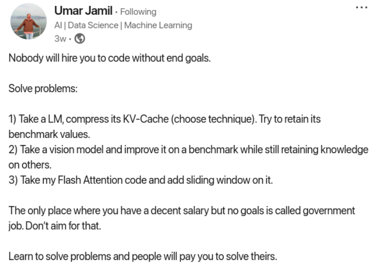
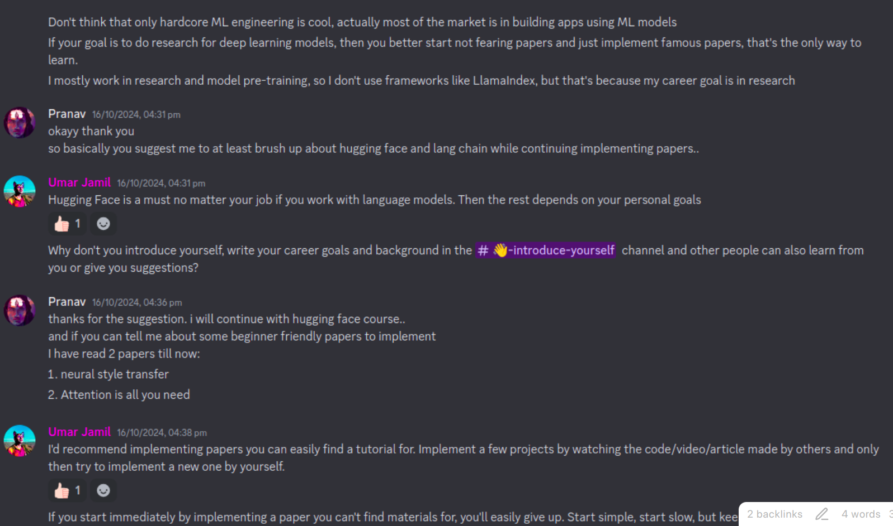
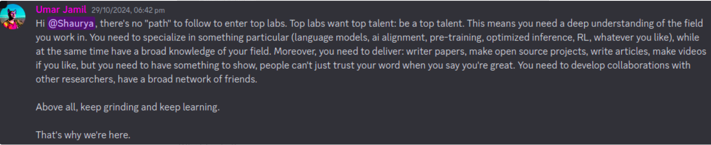
Research without a PHD
- Shape Suffixes — Good Coding Style | by Noam Shazeer | Medium
- Noam Shazeer didn’t even finished his bachelors degree.
- (co)Inventor of (Transformer), MoE, Multihead Attention, Multiquery Attention, Tensor-Parallel LLM Training, SwiGLU, etc. Previously @Google,
- He built @Character.AI
- Sarah Pan - works at answer.ai (as a researcher) just after highschool.
- She learnt Deep learning with Fastai course part 1 + 2
- Alec Radford during his undergrad, created DCGAN, core-contributer to initial Pytorch, built GPT1-2.
- **Not having a PHD degree is not issue.
- Just build a strong portfolio with projects, opensource-contribs, blogs etc.
Lessons learned as a Research Scientist
- Follow a T-shaped learning (as Andrew Ng told in his Career in ML lecture)
- Have some fundamental knowledge in CV, NLP, DL, classical ML, GPU programming..etc
- And Build Expertise in one of them.
How Andrej taught himself ML engineering
- Don’t start coding without an end goal.
- Coding Llama from scratch - is great to learn LLM fundamentals.
- But nobody will ever pay you to code llama from scratch you know what they will pay you for is take llama and try to quantize it in such a way that it retains as much as per the performance as possible
- So always build things whatever it is at an API level at the machine learning level with an end goal
- for example: imagine you are creating a company for a machine learning model inference who do you need the guy who on hugging phase just on a weekend delivered a quantized version of a model that you want to put on your service or the guy who can code llama and never quantize the model and never influenced the model ever in his life so building means do something with an end goal
- think always in this terms of business like I am going to launch a business that is doing machine learning inference or trying to solve a problem What problems will I have I will have probably the problem of okay how can we Host this model and make it as fast as possible or there is a new model and this context length is only 8K can we take it to 16k so let me do it.
- I know they follow tutorials and they make projects yes but you are just copying some code that is online did you actually deliver something because if I am the founder of a startup I can do that myself I need people who solve problems for me
- So learn to solve problems
- Take any model and you start beating a benchmark
- You take a model and you say okay this model is not really performing on a medical data so let me take a data set on medical data and try to improve the performance of this model on medical data trying to retain as much knowledge as possible
- The Learning Journey that will take you to beat The Benchmark will be enough for you to enter this field
- that’s what karpathy did. He wanted to learn about training of language models so he started writing a little script in Python to train a language model then he was pissed off because he said I don’t really understand what is happening under the hood then he started coding it in C and it called the he called his repository llm.c
- then he realized hey I can train this stuff I can understand this stuff and people start contributing to it and then he realized hey there are these things called cuda kernels I can write these Cuda kernels and they make it go fast then he realized hey I can go very deep into kernels so just by teaching himself something which is I want to train a model and this is the problem I want to solve and I want to do it the fastest way possible he teach him self all the field actually he teach himself all the things that he needed to master this field.
Hardest challenges
- When you nobody and want to enter AI field - you get inferiority complex. How to tackle it ?
- By Believing in yourself – By putting yourself in challenges & coming out of it.
- example :
- Take challenges
- Finish Fastai part 1,2 courses & Fastbook.
- 100 days CUDA challenge
- take up Kaggle competition - and atleast come up with end to end solution.
- finish the Andrej’s NN zero to hero course.
- How to read MML (mathematics for machine learning) book
- Try to read the applied chapter + the maths concepts needed (together)
- The Bottom Up (goal based approach)
- How to extract as much knowledge from the little resources ?
- This is a fundamental research skill.
- eg: Implementing Transformer paper without watching any tutorial (just by reading paper and code)
- How to do it ?
- Whenever you want to learn something - ground your learning path around A GOAL.
Umar’s journey : learning CUDA, triton & Flash Attention
- What is CUDA, Triton, Flash Attention ?
- Flash Attention is an optimised implementation of attention mechanism used in Transformers to make better use of GPU compute power. In the paper it’s refer to an “I/O-Aware” algorithm.
- CUDA is a software stack from NVIDIA to write GPU kernels for NVIDIA GPUs. Other GPU manufacturers have their own software stack (the equivalent for AMD GPUs is ROCm)
- Triton is a software stack that compiles GPU kernels written in Python into native code for the underlying GPU hardware (CUDA, ROCm, both compatible as of now.)
- I want to learn Triton : How do I start ?
- Before you start learning anything , ask yourself : “Why do I want to study triton ?”
- In Umar’s case : he like experimenting with new architectures and with new architectures you may need new kernels for accelerating the training process. Too many times I was blocked because i didn’t know how to edit/debug the [[Kernel]]s.
- Now its time to go to > Triton’s website
- Oh! I am confused what’s this ?
- Before you start learning anything , ask yourself : “Why do I want to study triton ?”
- You can never get lost: What’s this ?
- Anytime you are blocked somewhere and you don’t understand something - you can always prompt
- And you can never be blocked - because you can keep prompting untill you’re unlocked ! They will put you in right direction.
- Prompt >> [[What is Triton and How can i learn it ?]]
- Get your hands dirty !!
- You learn more by doing things and not just studying it (conceptually).
- Look at Triton Tutorials.
- Set yourself a goal/dream
- Umar saw Fused Attention coded in 400 lines of python code - and made a goal to understand it + re-implement it himself (in his Triton learning journey).
- Prompt >> [[How is Flash attention and fused attention related ?]]
- Always “Have a goal when you learn things”
- Don’t just learn Triton.
- Learn Triton in order to understand the Fused Attention.
- Umar saw Fused Attention coded in 400 lines of python code - and made a goal to understand it + re-implement it himself (in his Triton learning journey).
- Why having an objective is important when learning ?
- You always have something to measure against.
- You never get lost.
- It gives you sense of satisfaction when you reach your goal.
- Intermediate Goals also helps alot.
- Learning Strategy: Avoid being influenced by others’ tutorials initially. Challenge yourself. Define the “rules” of your learning challenge
- What are the rules of this objective ?
- Am I allowed to read papers, watch tutorials, blogs, code ?
- The difficulty of the challenge you choose - you’ll improve confidence+competence accordingly..
- Practical Steps: Started with the “vector addition” tutorial on the Triton website.
- Now we are trying to do the vector addition tutorial and we found an obstacle (Encountered concepts like pointers, block size, and thread IDs.) and we found resources about on how to kind of overcome this obstacle
- Overcoming Obstacles: When blocked, use the debugger or prompt LLMs to identify missing knowledge.
- Targeted Learning:
- You are doing triton , to understand flash attention
- You are doing vector addition (implemented in Triton’s first tutorial, on triton website)
- Learn just what you need , no more, no less
- When seeking external resources (like the “Programming Massively Parallel Processors” book), learn only what’s relevant to the immediate task (just learn enough for us to understand the things that are relevant to the vector addition only)
- I went to pmpp I I learned the first two chapters I think enough for you to understand vector addition and to give you a little intuition on all the concept that you need to at least understand fully.
- Final Boss: Finish the tutorials, then move on to the “final boss” - flash attention.
- When we start reading (Flash Attention) paper, we encounter so many new terms… So let’s go down rabbit holes ?
- Untill now - our strategy was - every time we encounter an obstacle - we ask chatgpt for directions ; overcome the obstacle and go back to objective.
- Paper Reading strategy is different.
- Learn to handle the uncertainity.
- Read the entire paper , top to bottom , even if you understand 5% of it.
- While reading the paper , you’re constantly reminded of how many things you don’t understand and this makes you uncomfortable: its fine. Keep Going On!
- Once you reach the end , you’ll have a clear vision of what you don’t know, and now you can come up with a plan for how to fill your knowledge gaps.
- Tip: Highlight with different colors >> [[Color coding research papers]]
- things you don’t understand at all and you’d like to learn
- things you don’t understand and you’re fine not understanding (because maybe are not so relevant for your journey)
- things that you already know & you’d like to improve your knowledge on, etc.
- plus your brain is actually very smart at connecting dots even on things that you are not not fully familiar with.
- Don’t highlight while reading.. Highlight after reading.
- because this forces you to go through it again of course not every paper you can do it like this so it depends really on the level of depth that you want to reach
- Read the paper atleast 3 times – end to end.
- Now you know your objective - to understand all the necessary concepts/parts of this paper.
- Now you can go into rabbit hole of learning each of those concepts & you always comeback to the paper.
- Learn to handle the uncertainity.
- Learning Roadmap: Built a roadmap by identifying knowledge gaps in the Flash Attention paper (softmax, online softmax, GPU programming, backpropagation).
- What ingredients do we need to understand FA ?
- Attention mechanism
- Softmax
- Safe Softmax
- Online Softmax
- GPU programming
- HBM and Shared memory
- Tiling
- Tensor shapes
- CUDA/Triton
- Backpropagation
- Gradients
- Attention mechanism
- First Boss : Softmax
- If you go to theflash attention paper, the key challenge in implementing Flash Attention, particularly related to computing softmax when processing attention matrices in blocks.
- The core issue with block-wise computation of attention is handling the softmax normalization factor correctly.
- The problem arises because softmax requires knowledge of all values in a row to compute the normalization denominator (the sum of exponentials). When processing in blocks to save memory, you don’t have all values available at once.
- ![[Pasted image 20250310193729.png]]
- The two weapons to fight softmax :
- Reading is not enough. You need Active Learning.
- If there is an algorithm , code it.
- if there is an algorithm , test it on paper.
- if there is a proof :
- re-write it yourself on paper , the first time.
- if you want deeper understanding, try to redo the proof without having it infront of you.
- but I still didn’t understand it… What should I do ?
- Imagine you studied the online softmax, coded the algorithm, did the proof by yourself, but you still can’t figure out how it may be connected to FA .. What should you do ? Should you keep studying “online softmax” or should you continue ?
- After a reasonable time spent on a problem , Continue Forward and accept the uncertainity & the possibilty that you may have to go back to it again in future.
- Iterative Learning: Go back and forth between different resources (e.g., the Flash Attention paper and the online softmax paper) to reinforce understanding.
- what I do usually in these cases is go back and forth so I go to the flash attention paper try to understand how it’s used then if I don’t fully understand go back to the online softmax because every time you go back and forth
- so when you go back to the online softmax from the flashh attention paper you are reinforcing your learning of the flashh attention by trying to make it work with whatever you’re learning from the online softmax.
- Combining Code and Theory: Alternate between reading the paper and examining the code for new architectures.
- When I read a new architecture paper ,i don’t fully understand it just by reading the paper. Hence i go back and forth between the code and the paper.
- Sometimes The code is very cryptic as its written by researchers , not by good engineers, hence learn from paper and code together.
- Block Matrix Multiplication: Learned about block matrix multiplication, crucial for understanding Flash Attention’s block-by-block computation.
- Tensor Shapes and Strides: Understanding tensor shapes and strides is essential for GPU programming, as GPUs work with memory pointers.
- Backpropagation: The most challenging part, requiring understanding of gradients and chain rule.
What should I learn next ?
- What should I study next in order to grow in my career ?
- First rule : Follow curiousity , not hype.
- Second rule : Focus on consistency. it doesn’t really matter how bad your start is, with enough consistency, with enough trial and error, you can fix any intial bias in your learning.
- Third rule : if your learning speed hasn’t accelerated by using LLMs , youre doing something wrong.
How to keep up with research pace ?
- Everyday we see 100s of papers published. How to cut the noise ?
- Accelerated Learning:* Modern tools (LLMs) significantly accelerate learning. Prompting replaces time-consuming searches.
- Dual Stream Learning:* Keep up with new research (“noise stream”) but maintain a long-term learning focus.
- Secret Ingredient, Confidence:* The most crucial element is you. Build confidence by tackling challenging tasks. Push yourself beyond tutorials.
- Building Confidence:* Confidence comes from doing hard things, and pushing yourself further.
- Leaderboard Participation:* Encourages participating in the GPU Mode leaderboard, even if not fully confident. The only failure is not showing up.
- 10,000 Hours Rule:* Is the only rule that matters in life.